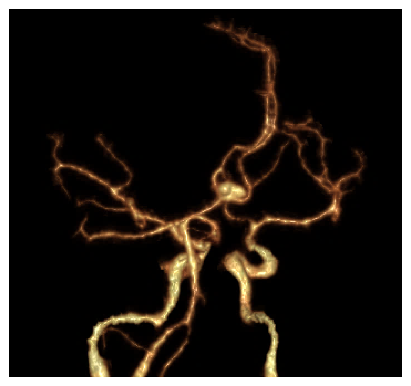
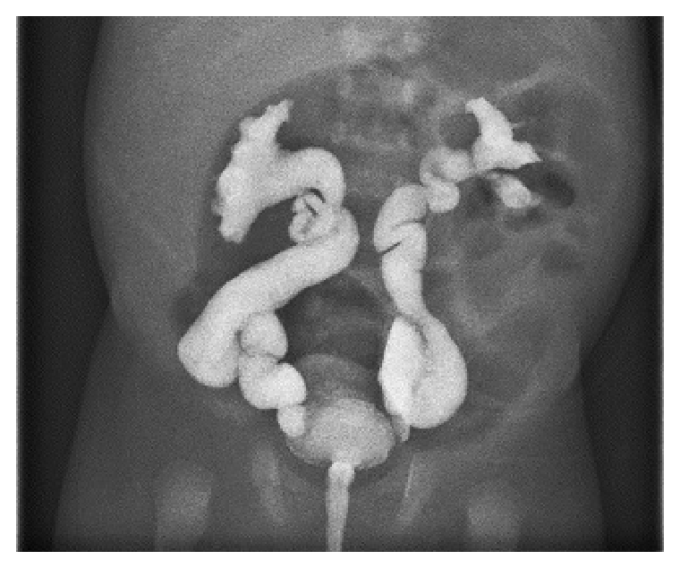
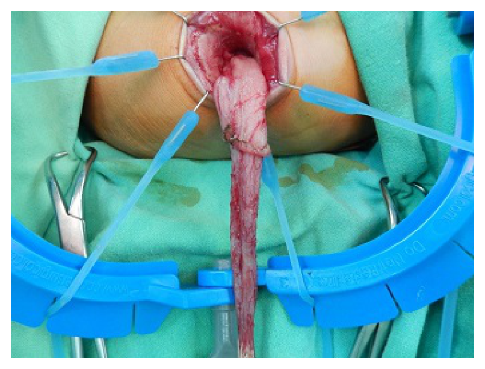
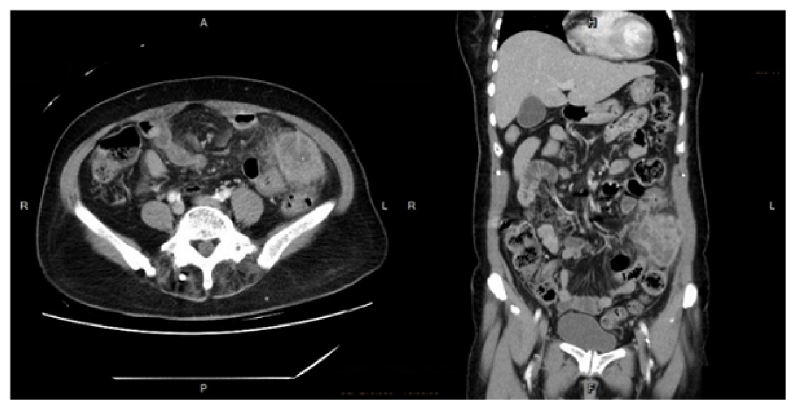
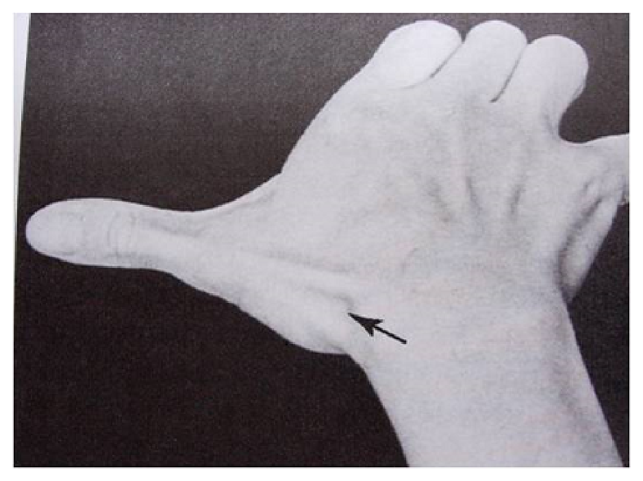
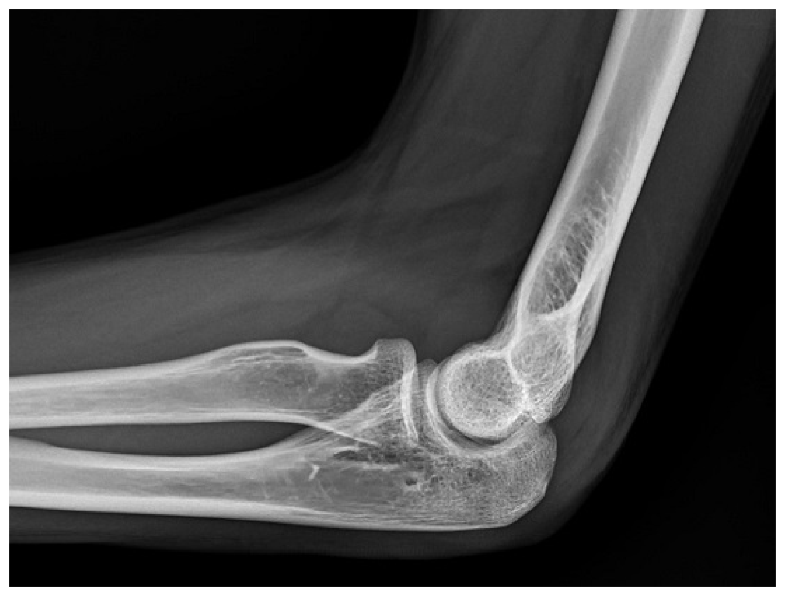
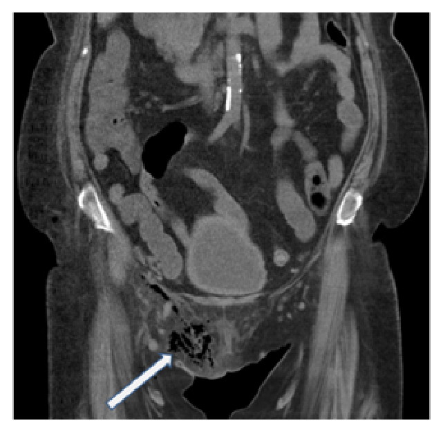
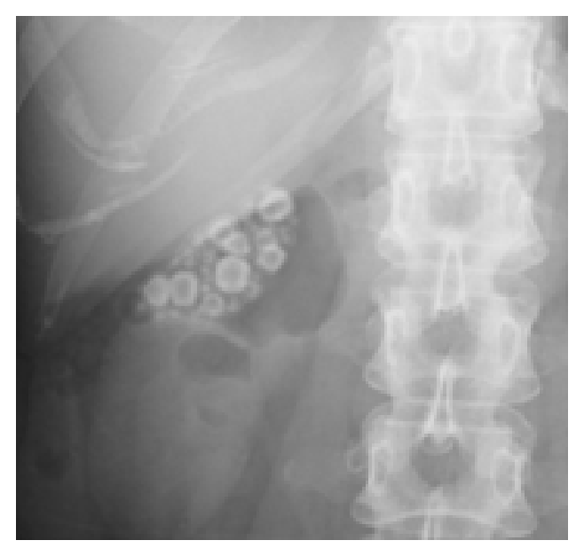

開卷有益 ／
醫師 ／ 醫學（五）（包括外科、骨科、泌尿科等科目及其相關臨床實例與醫學倫理） ／ 112 年第 2 次112 年第 2 次醫師醫學（五）（包括外科、骨科、泌尿科等科目及其相關臨床實例與醫學倫理）試題與答案
這一頁是民國 112 年第 2 次醫師醫學（五）（包括外科、骨科、泌尿科等科目及其相關臨床實例與醫學倫理）的整份歷屆試題，共 80 題，題目與標準答案出自考選部「國家考試試題及測驗式試題答案」開放資料，其中 80 題附有詳解。以下逐題列出題幹、選項與答案；要計時作答或記錄成績，請用線上練習。
考選部原始場次代碼：112080
線上作答這一科 →
全部 80 題
第 1 題
一位生命跡象不穩定的出血外傷病人到達急診室時，若決定啟動大量輸血的流程（massive transfusionprotocol），有關各種血品的使用單位比例以下列何者有最好的臨床結果？
（A） 血漿：血小板：紅血球為1單位：1單位：4單位（B） 血漿：血小板：紅血球為1單位：1單位：3單位（C） 血漿：血小板：紅血球為1單位：1單位：2單位（D） 血漿：血小板：紅血球為1單位：1單位：1單位本題送分，無標準答案
詳解與考點 本題經考選部公告一律給分。大量輸血流程血品比例之最佳實證因研究版本而異，PROPPR試驗支持(D)血漿：血小板：紅血球1：1：1可降低出血相關死亡；惟傳統臨床實務與部分準則仍採(C)1：1：2作為標準比例，兩者於整體死亡率上無顯著差異，致(C)(D)何者為「最佳臨床結果」之答案存有分歧。(A)1：1：4與(B)1：1：3血品比例偏低，未達現行大量輸血準則建議範圍，可先排除。作答以現行外傷急症醫學大量輸血準則實證為準。
第 2 題
肺水腫為手術後的肺部併發症之一，下列何種狀況較不容易造成肺水腫？
（A） 胰臟炎（B） 體液容積過量（C） 急性左心衰竭（D） 高血壓答案：（D）
詳解與考點 正解：術後肺水腫的成因，問較不容易造成者。肺水腫多由肺微血管靜水壓上升、血管通透性增加或體液過多造成；單純高血壓若未導致急性左心衰竭，並非直接而常見的術後肺水腫原因，故選 D。
A：急性胰臟炎可造成全身發炎與微血管通透性增加，嚴重時可引起急性肺損傷及非心因性肺水腫。
B：體液容積過量會增加血管內靜水壓，尤其術後輸液過多或腎功能不佳時，容易造成肺水腫。
C：急性左心衰竭使左心充盈壓上升、血液回堵至肺循環，是心因性肺水腫的典型機轉。
本題考點：肺水腫（pulmonary edema）的心因性與非心因性機轉；體液容積過量（volume overload）與左心衰竭（left heart failure）；急性胰臟炎（acute pancreatitis）的全身發炎併發症。
第 3 題
困難梭狀芽孢桿菌感染症（Clostridioides difficile infection）是抗生素相關性腹瀉常見的原因，與腹部手術後之恢復過程息息相關，下列敘述何者錯誤？
（A） 症狀會出現水瀉、血便、發燒（B） 診斷可從糞便的困難梭狀桿菌毒素試驗檢出陽性或是藉由大腸鏡進行切片檢查（C） 治療需停止目前使用之抗生素，並使用廣效性抗革蘭氏陰性菌抗生素（D） 腹瀉會導致電解質及水分的不平衡，需補充水分及電解質答案：（C）
詳解與考點 正解：困難梭狀芽孢桿菌感染（Clostridioides difficile infection, CDI）合併抗生素使用，問錯誤處置。治療原則是停用不必要的誘發抗生素，並使用對 CDI 有效的抗菌治療；再加用廣效抗革蘭氏陰性菌抗生素反而會加劇腸道菌相失衡，不是治療方向，故選 C。
A：CDI 常見水瀉、腹痛與發燒；嚴重腸炎可見血便，因此敘述可成立。
B：糞便毒素或核酸檢測可協助診斷；在適當臨床情境下，內視鏡可見偽膜性腸炎並可取樣，故非錯誤敘述。
D：腹瀉會造成水分與電解質流失，補充水分及電解質是必要的支持性治療。
本題考點：困難梭狀芽孢桿菌感染（Clostridioides difficile infection）；抗生素相關腹瀉（antibiotic-associated diarrhea）；抗生素管理（antimicrobial stewardship）與水電解質支持治療。
第 4 題
造成傷口癒合延遲的最常見原因為：
（A） 傷口感染（B） 縫合技巧不佳（C） 傷口流血（D） 病人本身之合併症答案：（A）
詳解與考點 正解：「最常見」的傷口癒合延遲原因。感染會增加局部發炎、組織破壞與滲出，妨礙肉芽組織形成和傷口閉合，是臨床上最常見且最先要排除的可逆原因，故選 A。
B：縫合技巧不佳可造成張力過大、死腔或邊緣對合不良，但不是整體而言最常見的延遲癒合原因。
C：傷口流血或血腫可能增加感染與傷口張力風險，卻屬特定局部併發症，不能取代感染的常見性。
D：糖尿病、營養不良等合併症確會影響癒合；它看似涵蓋面很廣，但題目問單一最常見直接原因時，仍以傷口感染較符合。
本題考點：傷口癒合（wound healing）的發炎、增生與重塑期；手術傷口感染（surgical wound infection）是延遲癒合的重要且常見原因；局部因素與病人全身性危險因子的區分。
第 5 題
下列何種狀況，不符合「手術部位感染（surgical site infection）」之定義？
（A） 77歲女性，消化性潰瘍穿孔術後，因呼吸衰竭持續使用呼吸器，於術後第21天發生肺炎與敗血症（B） 45歲男性，長期肝硬化與糖尿病，於接受未置入人工網膜之疝氣修補手術28天後，癒合不良產生分泌物與膿瘍（C） 69歲男性，接受膝關節置換手術11個月後，傷口出現紅腫，皮下穿刺之組織液細菌培養呈現陽性反應（D） 82歲女性，接受經腹腔鏡部分胃切除手術，腹部傷口正常，然而於術後第6天出現劇烈腹痛與發燒，電腦斷層發現腸胃道吻合處有膿瘍形成答案：（A）
詳解與考點 正解：手術部位感染（surgical site infection, SSI）必須發生在手術相關的切口、器官或腔室。術後第21天的肺炎與敗血症是遠端呼吸道感染，沒有涉及手術切口或腹腔手術部位，因此不符合 SSI 定義，故選 A。
B：未置入人工植入物的手術後 28 天內，切口癒合不良合併分泌物與膿瘍，符合表淺或深部切口 SSI 的情境。
C：依本題採用的傳統定義，膝關節置換有人工植入物，術後 1 年內出現傷口紅腫且深部檢體培養陽性，可符合植入物相關深部 SSI 的判定時間範圍；現行監測定義可能採 90 天，不能將本題的歷史口徑當成通則。
D：術後第6天吻合處膿瘍位於手術處理的器官或腔室，屬器官／腔室 SSI，而非因腹壁切口外觀正常就能排除。
本題考點：手術部位感染（surgical site infection, SSI）的表淺切口、深部切口及器官／腔室分類；SSI 必須與手術部位相關；遠端肺炎不屬 SSI。
第 6 題
臨床上用以評估肝臟疾病的嚴重程度時會使用所謂的「末期肝臟疾病模型」分數（Model for End-Stage LiverDisease score, MELD score）來評分肝臟移植優先順位。下列何者不是計算MELD score的重要參數？
（A） 血清總膽紅素（total bilirubin）（B） 白血球計數 （white blood cell count）（C） 血清肌酐酸（creatinine）（D） 凝血酶原時間國際標準化比值（international normalized ratio, INR）答案：（B）
詳解與考點 正解：傳統末期肝臟疾病模型分數（Model for End-Stage Liver Disease, MELD）所用的實驗室參數。其核心是血清膽紅素、血清肌酐與 INR，用來反映膽汁排泄、腎功能及凝血功能；白血球計數不在此計算式中，故選 B。
A：血清總膽紅素（total bilirubin）是傳統 MELD 的核心參數之一，反映肝臟排泄功能，故不是答案。
C：血清肌酐（creatinine）反映腎功能，而腎功能惡化會影響肝病患者預後，因此納入 MELD。
D：INR 反映肝臟合成凝血因子的能力，是傳統 MELD 的核心參數之一。
本題考點：末期肝臟疾病模型（Model for End-Stage Liver Disease, MELD）；血清膽紅素（bilirubin）、肌酐（creatinine）與 INR；肝臟移植（liver transplantation）的疾病嚴重度評估。
第 7 題
對於燒傷病人的淨體重損失（loss of lean body mass）相關合併症的發生，下列敘述何者最恰當？
（A） 淨體重損失10%，增加延緩傷口癒合機率（B） 淨體重損失20%，會開始增加降低免疫機能（immune dysfunction）的風險（C） 淨體重損失30%，會開始增加肺炎及壓瘡（pressure sore）的風險（D） 淨體重損失40%，會開始增加脆弱性骨折的風險答案：（C）
詳解與考點 正解：燒傷後淨體重損失（loss of lean body mass）的傳統分層併發症。隨蛋白質分解與肌肉耗損加劇，約 30% 的淨體重損失會明顯增加感染相關併發症，例如肺炎與壓瘡，故選 C。這些精確百分比屬傳統教學門檻，臨床風險仍會隨年齡、燒傷範圍、營養與感染狀態而變動。
A：較小程度的淨體重損失可影響免疫與傷口癒合，但將「延緩傷口癒合」固定配在 10% 不符合本題所用的傳統分層。
B：免疫功能下降會隨耗損增加而出現，但本題的經典配對並非以 20% 作為開始增加免疫失調風險的門檻。
D：40% 的嚴重淨體重損失代表極高死亡風險；以脆弱性骨折作為其代表性最先增加的併發症，並非本題的典型分層。
本題考點：燒傷高代謝狀態（burn hypermetabolism）；淨體重損失（loss of lean body mass）與感染、傷口癒合及死亡風險；營養支持（nutritional support）在重症燒傷照護的角色。
第 8 題
有關腦下垂體（pituitary）腫瘤治療，下列何者不是以手術切除為第一優先？
（A） 促腎上腺皮質素瘤（ACTH secreting tumor）（B） 生長激素瘤（growth homone secreting tumor）（C） 甲狀腺刺激素瘤（TSH secreting tumor）（D） 泌乳激素瘤（prolactinoma）答案：（D）
詳解與考點 正解：腦下垂體腫瘤中「不是以手術第一優先」者。泌乳激素瘤（prolactinoma）多先以多巴胺致效劑（dopamine agonist）降低泌乳激素並縮小腫瘤；手術通常保留給藥物無效、不耐受或特定壓迫情況，故選 D。
A：促腎上腺皮質素瘤（ACTH-secreting tumor）造成庫欣病時，經蝶竇手術切除通常是主要治療方式。
B：生長激素瘤（growth hormone-secreting tumor）造成肢端肥大症時，若可切除，手術是重要的第一線治療。
C：甲狀腺刺激素瘤（TSH-secreting tumor）多為腺瘤，手術切除通常是優先處置；藥物可作為輔助或無法手術時的選擇。
本題考點：腦下垂體腺瘤（pituitary adenoma）的功能性分類；泌乳激素瘤（prolactinoma）的多巴胺致效劑治療；經蝶竇手術（transsphenoidal surgery）的適應症。
第 9 題
有關出血性腦中風後之照護，下列何者錯誤？
（A） 血糖控制小於180 mg/dL（B） 血壓控制，收縮壓小於140～160 mmHg（C） 注意壓瘡（D） 一定要投與預防癲癇用藥答案：（D）
詳解與考點 正解：出血性腦中風後照護中「錯誤」的絕對化敘述。沒有癲癇發作或其他明確適應症時，不應對所有病人一律預防性投與抗癲癇藥；必須依出血位置、臨床癲癇發作及腦波等情況個別評估，故選 D。精確血壓目標具指引時效敏感性，仍須依臨床情境調整。
A：急性腦中風照護需避免顯著高血糖，血糖控制在不過度嚴格的範圍是合理原則，故非錯誤。
B：血壓控制可降低血腫擴大風險；實際收縮壓目標須配合病情與治療策略，題目所列範圍屬合理的急性期控制方向。
C：腦中風患者活動受限，壓瘡預防是基本照護，不是錯誤處置。
本題考點：腦出血（intracerebral hemorrhage）的急性照護；血壓與血糖管理；癲癇（seizure）的個別化處置，非例行性預防用藥。
第 10 題
有關附圖之電腦斷層血管攝影影像，下列敘述何者正確？

（A） 建議服用抗血小板藥物，防止血栓產生進一步造成腦血管梗塞（B） 此為顱內動脈瘤好發的位置之一（C） 此影像顯示為中大腦動脈動脈瘤（D） 影像中可以看出此動脈瘤已破裂答案：（B）
詳解與考點 正解：影像為顱內電腦斷層血管攝影，可見前循環中央、兩側前大腦動脈近端交會處附近有囊狀向外膨出的血管病灶，位置符合前交通動脈（anterior communicating artery, ACom）複合體。前交通動脈是顱內囊狀動脈瘤常見的好發部位之一，故選 B。
A：未破裂顱內動脈瘤的處置重點是依動脈瘤大小、形態、位置與病人風險評估追蹤或血管內／手術治療；抗血小板藥物並非為了防止此動脈瘤形成血栓後再造成腦梗塞的常規建議，且須權衡出血風險，故不正確。
C：中大腦動脈瘤多位於中大腦動脈分叉處，位置偏向大腦外側裂區；本圖病灶位於前循環正中、前大腦動脈近端交會附近，並非中大腦動脈動脈瘤。
D：血管攝影可顯示動脈瘤的血管腔與形態，但是否已破裂須結合臨床突發劇烈頭痛及頭部電腦斷層的蛛網膜下腔出血等證據判斷；僅由本圖無法看出破裂的出血表現，故不正確。
本題考點：顱內囊狀動脈瘤（intracranial saccular aneurysm）常發生於Willis環分叉處；前交通動脈瘤（anterior communicating artery aneurysm）是常見位置；電腦斷層血管攝影（CT angiography, CTA）用於定位與評估動脈瘤，破裂與否仍須結合出血影像及臨床表現。
第 11 題
下列關於急性腰椎椎間盤突出疾病的敘述，何者最不適當？
（A） 大部分腰椎椎間盤突出發生在L4-5和L5-S1 level，少部分在L3-4 level（B） 主要病因爲長期腰椎損傷，如前傾彎腰和負重物等（C） 主要症狀為下背痛和急性下肢神經病變，以下肢神經根疼痛為主要症狀（D） 如數日後疼痛緩解，下肢麻木感取代部分疼痛，則表示神經根病變有緩解答案：（D）
詳解與考點 正解：急性腰椎椎間盤突出後神經症狀的變化。疼痛減輕後若持續或新出現下肢麻木，不可直接解讀為神經根病變緩解；感覺症狀可能代表仍有神經壓迫，並須警覺肌力下降、馬尾症候群等神經學惡化，故最不適當的是 D。
A：腰椎椎間盤突出最常發生在活動度與負重較大的 L4-5、L5-S1 節段，L3-4 較少，敘述正確。
B：反覆彎腰、搬重物等機械負荷與椎間盤退化及突出有關，是常見危險因子。
C：下背痛合併沿神經根分布的下肢放射痛是典型表現，故非最不適當。
本題考點：腰椎椎間盤突出（lumbar disc herniation）；神經根病變（radiculopathy）的疼痛、麻木與肌力評估；馬尾症候群（cauda equina syndrome）的警訊。
第 12 題
A three-column model被用來作為胸腰椎骨折嚴重度的分類。下列選項關於middle column的組成，何者正確？
（A） 椎體全部，後縱走韌帶（B） 後半部椎體，後縱走韌帶（C） 後半部椎體，後縱走韌帶，椎莖（D） 後縱走韌帶，椎莖，椎關節答案：（B）
詳解與考點 正解：Denis 三柱模型（three-column model）的中柱（middle column）組成。中柱完整包括椎體後半部、後側纖維環及後縱韌帶（posterior longitudinal ligament）；它位於前柱與後柱間，是判讀胸腰椎骨折穩定性的重要結構，故選 B。
A：椎體「全部」包含前半部；前半部屬前柱的一部分，不能全部歸入中柱。
C：椎體後半部與後縱韌帶正確，但椎莖屬後方骨性結構，納入後柱而非中柱，故整體錯誤。
D：後縱韌帶屬中柱，但椎莖與椎關節皆為後柱結構；混合不同柱的成分是最容易混淆之處。
本題考點：Denis 三柱模型（Denis three-column model）；中柱（middle column）由椎體後半部與後縱韌帶組成；胸腰椎骨折（thoracolumbar fracture）的穩定性評估。
第 13 題
有關第二級腦震盪的敘述，下列何者錯誤？
（A） 頭部外傷後失去意識一段時間，即屬於第二級腦震盪（B） 受傷後1～2週容易再度受傷，應避免劇烈撞擊型運動（C） 這類病人容易有失憶症狀（D） 受傷後1～2週容易有記憶障礙或頭痛症狀答案：（A）
詳解與考點 正解：題目採用的第二級腦震盪分級，問錯誤敘述。依此傳統分級，第二級腦震盪的重點是短暫混亂或失憶等神經認知症狀，並非以「失去意識一段時間」即可定義；因此（A）把意識喪失直接歸類為第二級，敘述錯誤，故選 A。此類第一、二、三級分法已非現今最常用的腦震盪評估架構，精確分級須依現行臨床評估判定。
B：腦震盪後短期內再次受到頭部撞擊可能使症狀加劇或增加再受傷風險，避免劇烈碰撞運動是合理建議。
C：失憶是腦震盪常見的神經認知症狀之一，與本題所指的第二級表現相符。
D：頭痛與記憶困難可在受傷後持續一段時間，敘述符合腦震盪後症狀的可能表現。
本題考點：腦震盪（concussion）的神經認知症狀；失憶（amnesia）與意識喪失（loss of consciousness）的區分；漸進式重返運動（graduated return to sport）與再受傷預防。
第 14 題
有關血管腫瘤和血管畸形，下列何者錯誤？①有一半比例的血管瘤（hemangioma）在一歲前會完全消失 ②硬化劑注射（sclerotherapy）是治療動靜脈畸形（arteriovenous malformation）的最好方法 ③血管腫瘤（vascular tumors）是因為內皮細胞異常增生，血管畸形（vascular malformations）是動靜脈或淋巴系統異常發展 ④微血管畸形與動靜脈畸形不同，會隨著年紀增長而萎縮變小，甚至消失
（A） 僅①③（B） ②③（C） ①②④（D） ①③④答案：（C）
詳解與考點 正解：區分會自行消退的血管腫瘤與隨身體持續存在的血管畸形。嬰兒血管瘤是內皮細胞增生的血管腫瘤，會經過增生期與消退期，但不是一半在 1 歲前完全消失，故①錯；動靜脈畸形通常須依病灶考慮栓塞、手術或合併治療，硬化劑注射並非其最佳的通則，故②錯；微血管畸形不會隨年齡萎縮消失，故④錯。錯誤組合為①②④，故選 C。
A：此組合漏掉（②）硬化劑注射是動靜脈畸形最好治療與（④）微血管畸形會自行消失兩項錯誤；相對地，（③）正確指出兩類病變的基本病理差異。
B：此組合把（③）列為錯誤不當。血管腫瘤確有內皮細胞異常增生，而血管畸形是血管或淋巴系統發育異常，這正是兩者的核心鑑別。
D：此組合把（③）誤列為錯誤，且漏列（②）；最容易混淆的是兩者都可見血管增多，但血管畸形不是腫瘤性內皮細胞增殖。
本題考點：血管腫瘤（vascular tumors）與血管畸形（vascular malformations）的鑑別；嬰兒血管瘤（infantile hemangioma）的增生與消退；動靜脈畸形（arteriovenous malformation）及微血管畸形（capillary malformation）的自然病程。
第 15 題
球狀血管瘤（glomus tumor）最常見於下列那個位置？
（A） 髖關節（B） 手肘（C） 手指（D） 頭頸部答案：（C）
詳解與考點 正解：球狀血管瘤典型的發生部位。球狀血管瘤源自負責體溫調節的 glomus body，最常見於手指末端，尤其是甲床下或指端，常表現為局部劇痛、對冷敏感與針點壓痛三聯徵，故選 C。
A：髖關節並非 glomus body 密集或球狀血管瘤的典型位置；深部或其他部位雖可罕見發生，不能取代手指的典型定位。
B：手肘可有各類軟組織腫瘤，但不是球狀血管瘤最常見的部位，與其常見的甲下小病灶不符。
D：頭頸部也可能出現異位的球狀血管瘤，卻遠不如（C）手指常見；誘答之處在於球狀血管瘤可發生於全身，不代表最常見位置不是手指。
本題考點：球狀血管瘤（glomus tumor）；glomus body 的體溫調節功能；甲下病灶（subungual lesion）的疼痛、冷敏感與壓痛表現。
第 16 題
根據Mathes-Nahai classification，下列各種肌肉皮瓣及其所屬類型配對，何者錯誤？
（A） type I：比目魚肌（gastrocnemius）（B） type II：股薄肌（gracilis）（C） type III：胸大肌（pectoralis major）（D） type IV：縫匠肌（sartorius）本題送分，無標準答案
詳解與考點 本題經考選部公告一律給分。依Mathes-Nahai分類，(A)選項中文寫「比目魚肌」卻標註英文gastrocnemius（腓腸肌），中英名稱本身即互相矛盾，比目魚肌屬type II而非type I，致(A)配對之對錯因譯名混淆而難以判定；(C)胸大肌依教材多歸類為type V（雙主要蒂加節段蒂）而非題述之type III，亦屬明顯錯誤配對，與(A)同時構成何者才是「錯誤配對」的爭議。(B)股薄肌type II、(D)縫匠肌type IV為公認正確配對。作答以現行整形外科肌皮瓣分類教材為準。
第 17 題
拉皮手術後合併使用輔助性去除臉上細紋最適合用下列何種消融式雷射（ablative laser）？
（A） 銣雅鉻雷射（Nd:YAG laser）（B） 脈衝式染料雷射（pulsed dye laser）（C） 分段式二氧化碳雷射（fractional CO2 laser）（D） 紅寶石雷射（ruby laser）答案：（C）
詳解與考點 正解：拉皮後欲改善細紋，且指定「消融式」雷射。分段式二氧化碳雷射以水為主要吸收目標，造成分段式表皮與真皮熱傷害，促進膠原蛋白重塑，可改善細紋；分段照射又保留未受治療皮膚以利修復，適合作為拉皮後的輔助治療，故選 C。
A：題目所稱的 Nd:YAG laser（釹雅鉻雷射）主要用於血管病灶、除毛或較深層血管相關治療，並非改善臉部細紋最常用的消融式選擇。
B：脈衝式染料雷射主要由血紅素吸收，用於血管性紅斑、微血管擴張或疤痕紅色期；它看似可改善術後泛紅，卻不是以消融換膚來治療細紋。
D：紅寶石雷射的主要適應症是色素病灶與除毛，作用標的為黑色素，並非細紋重塑所需的消融式水吸收雷射。
本題考點：消融式雷射（ablative laser）；分段式二氧化碳雷射（fractional CO2 laser）；皮膚膠原重塑（collagen remodeling）與細紋治療。
第 18 題
關於男性女乳症（gynecomastia），下列敘述何者錯誤？
（A） 藥物的作用可能導致男性女乳症的發生，如spironolactone等（B） 一般而言，男性女乳症是一種良性的男性乳房組織增生，與罹患乳癌風險較無關聯（C） 生理性男性女乳症在新生兒期（neonatal period）、青春期（adolescence）及晚年期（senescence）皆可發生（D） 男性女乳症會發現在Klinefelter's syndrome的病患，且與罹患乳癌風險較無關聯答案：（D）
詳解與考點 正解：男性女乳症合併 Klinefelter syndrome 時的乳癌風險。男性女乳症本身多為良性乳腺組織增生，但 Klinefelter syndrome 患者的男性乳癌風險高於一般男性；（D）卻稱兩者無關聯，故為錯誤敘述，選 D。
A：spironolactone 具抗雄性素及影響類固醇生成的作用，可造成雌雄性素作用失衡而引發男性女乳症，敘述正確。
B：單純男性女乳症通常是良性增生，不能直接等同乳癌，也不表示必然增加乳癌風險；應以是否有單側硬塊、乳頭分泌物或其他警訊另行評估，故此敘述可成立。
C：新生兒受母體荷爾蒙影響、青春期的生理荷爾蒙波動與老年期雄性素下降，都可出現生理性男性女乳症，敘述正確。
本題考點：男性女乳症（gynecomastia）的藥物與生理性成因；Klinefelter syndrome；男性乳癌（male breast cancer）的危險因子。
第 19 題
王同學和同學在KTV歡唱，突然電線走火引起火災。包廂內沙發地毯燃燒，煙霧瀰漫。王同學逃出現場後被送往醫院，發現面部燻黑，有水泡，雙上肢及下肢燒傷。此時如果你是值班外科醫師處理王同學，下列何項錯誤？
（A） 懷疑有吸入性灼傷應照胸部X光，無法確認時再做胸部電腦斷層（CT scan）（B） 嚴重燒傷（severe burn），主要死因之一為吸入性灼傷（C） 上呼吸道有水腫時，即使病人意識清楚，仍要考慮插管治療的必要性（D） 不建議使用預防性抗生素，除非肺部出現感染現象答案：（A）
詳解與考點 正解：密閉空間火災、面部燻黑與水泡，應高度懷疑吸入性灼傷並優先評估氣道。吸入性灼傷的早期胸部 X 光常未見特異變化，胸部 CT 也不是「X 光無法確認時」的常規確認檢查；氣道風險主要靠臨床評估與必要時直接氣道檢查，故（A）錯誤，選 A。
B：吸入性灼傷會增加嚴重燒傷的呼吸衰竭與死亡風險，是影響預後的重要傷害，敘述正確。
C：上呼吸道水腫可能迅速進展而使後續插管困難；即使當下意識清楚，若有氣道受損徵象仍須及早考慮確保氣道，敘述正確。
D：燒傷病人不常規預防性使用全身抗生素，以免增加抗藥性與不良反應；有明確肺部感染或其他感染證據時才依情況治療，敘述正確。
本題考點：吸入性灼傷（inhalation injury）的早期氣道處置；燒傷復甦（burn resuscitation）中的 airway 優先原則；抗生素管理（antimicrobial stewardship）。
第 20 題
主動脈剝離是一項廣為人知的急症，關於其敘述下列何者錯誤？
（A） 當剝離範圍包含主動脈根部（aortic root）時，可能造成急性主動脈瓣閉鎖不全（B） 主動脈剝離依照Stanford的分類，是以intima tear的位置分為type A及type B，type A是指破口位於升主動脈（ascending aorta），type B則是破口位於降主動脈（C） acute type A aortic dissection須接受緊急開胸手術修補，最主要是為了防止急性升主動脈破裂（D） acute type B aortic dissection若無合併灌流不足症候群，可先使用藥物控制血壓答案：（B）
詳解與考點 正解：Stanford 分類的依據。Stanford 分類是看剝離是否累及升主動脈：累及升主動脈為 type A，未累及升主動脈而侷限於降主動脈者為 type B；不是依內膜破口的位置分類，因此（B）錯誤，選 B。
A：剝離若累及主動脈根部，可破壞主動脈瓣環支持或造成瓣葉閉合不良，進而出現急性主動脈瓣閉鎖不全，敘述正確。
C：急性 type A 主動脈剝離有心包填塞、主動脈瓣閉鎖不全與破裂等致命風險，通常須緊急手術處理，敘述正確。
D：無破裂、器官灌流不足或難以控制疼痛等複雜表現的急性 type B 剝離，初始治療以降低心率與血壓、減少主動脈壁剪力為主，敘述正確。
本題考點：Stanford 主動脈剝離分類（Stanford classification）；急性 type A aortic dissection 的手術適應症；急性 type B aortic dissection 的初始藥物治療。
第 21 題
有關血管腔内治療腹主動脈瘤（endovascular treatment of abdominal aortic aneurysm）發生滲漏（endoleak）的敘述，下列何者錯誤？
（A） 第一型發生在支架血管近端的接觸區（B） 第二型發生在暢通的腰動脈或是下腸繫膜動脈回流造成（C） 第三型發生在支架血管遠端的接觸區（D） 第四型因為支架血管的織物孔洞而造成答案：（C）
詳解與考點 正解：血管腔內腹主動脈瘤修補術後 endoleak 的分型。type III endoleak 是支架血管組件接合處分離或織物破損造成的支架內漏血；遠端接觸區密封不良屬 type I endoleak，而非 type III，因此（C）錯誤，選 C。
A：type I endoleak 是支架與原生血管密封區漏血，可發生於近端接觸區，敘述正確。
B：type II endoleak 是腰動脈、下腸繫膜動脈等側枝逆向回流進入瘤囊所致，敘述正確。
D：type IV endoleak 與支架血管織物孔隙滲漏有關，通常與植入後早期的抗凝狀態及材料滲透性相關，敘述正確。
本題考點：血管腔內主動脈瘤修補術（EVAR）；內漏（endoleak）type I、II、III、IV 的來源；支架密封區（attachment site）與支架組件失效。
第 22 題
65歲男子，以血管重建術治療急性下肢缺血2小時後，下肢發生劇烈疼痛。檢查發現小腿肌肉緊繃，且被動彎曲時產生劇烈疼痛；足部無脈搏，但有杜卜勒訊號（positive ultrasound signal）。關於此病人，下列何種情形最不可能發生？
（A） 高血鉀（B） 高血鈣（C） 肌酸磷酸激酶濃度上升（D） 肌紅蛋白尿（myoglobinuria）答案：（B）
詳解與考點 正解：血管重建後劇痛、緊繃小腿與被動牽拉痛，提示再灌流傷害合併急性腔室症候群。缺血肌肉受損會釋出鉀離子、肌酸磷酸激酶與肌紅蛋白，並可因脂肪壞死、磷酸鹽上升及鈣沉積出現低血鈣；因此高血鈣最不可能，故選 B。
A：橫紋肌細胞破壞與再灌流可使細胞內鉀離子釋出，造成高血鉀，尤其須警覺心律不整風險，並非最不可能。
C：肌肉缺血壞死會使肌酸磷酸激酶上升，是橫紋肌溶解（rhabdomyolysis）的常見檢驗表現，敘述可發生。
D：肌紅蛋白自受損骨骼肌釋出後經腎臟排泄，可形成肌紅蛋白尿並造成急性腎損傷風險，敘述可發生。
本題考點：急性腔室症候群（acute compartment syndrome）；再灌流傷害（reperfusion injury）；橫紋肌溶解（rhabdomyolysis）的高血鉀、CK 上升與肌紅蛋白尿。
第 23 題
有關心房中隔（atrial septal defect, ASD）之敘述，下列何者錯誤？
（A） 在年齡大於40歲病人的心房中隔缺損，心導管檢查是高度建議的（B） 有心房中隔缺損且固定之肺動脈阻力過高（大於12 Wood units）之病患，不可以將其缺損關閉（C） 在有ASD with inferior sinus venosus type的病患，常併有二尖瓣逆流（mitral regurgitation）（D） 在青春期前的女性，不適合使用右前側開胸術（anterolateral thoracotomy）來修補答案：（C）
詳解與考點 正解：inferior sinus venosus type ASD 的常見合併異常。sinus venosus type ASD 的重點是常伴隨部分肺靜脈回流異常（partial anomalous pulmonary venous return），不是典型地合併二尖瓣逆流；故（C）錯誤，選 C。
A：年長 ASD 病人須評估肺血管阻力、冠狀動脈與其他血流動力學問題，心導管檢查可提供關閉缺損前的重要資訊，敘述正確。
B：若肺血管阻力已固定且很高，關閉 ASD 可能使右心衰竭或肺高壓惡化，因此不可貿然關閉，敘述正確。
D：青春期前女性採右前側開胸術可能影響乳房及胸壁發育，傳統上會避免作為修補切口，敘述正確。
本題考點：心房中隔缺損（atrial septal defect, ASD）；sinus venosus ASD 與部分肺靜脈回流異常（partial anomalous pulmonary venous return）；肺血管阻力（pulmonary vascular resistance）與缺損關閉評估。
第 24 題
一個8個月大的男嬰，因主動脈瓣狹窄（aortic stenosis）診斷入院，因呼吸喘而插管，左心室到主動脈壓力差為60 mmHg，下列建議之治療方式何者最不適合？
（A） 氣球擴張術（balloon valvuloplasty）（B） 直視下主動脈瓣膜切開術（surgical valvotomy）（C） 機械瓣膜置換術（mechanical valve replacement）（D） 肺動脈瓣轉至主動脈之手術（Ross procedure）答案：（C）
詳解與考點 正解：8 個月大嬰兒的重度主動脈瓣狹窄。此年齡治療目標是解除左心室流出道阻塞並保留可生長的瓣膜或自體組織；機械瓣無法隨嬰兒成長，且需長期抗凝，因此最不適合作為初始治療，故選 C。
A：氣球瓣膜擴張術可降低瓣膜狹窄的壓力差，是嬰幼兒主動脈瓣狹窄的可行治療選項。
B：直視下瓣膜切開術可在適當解剖條件下直接解除瓣葉融合，屬保留原生瓣膜的治療方式，並非最不適當。
D：Ross procedure 以肺動脈瓣作為主動脈瓣，較能因應兒童生長；雖是較大型手術而須選擇病人，仍比機械瓣置換更符合兒童長期考量。
本題考點：先天性主動脈瓣狹窄（congenital aortic stenosis）；氣球瓣膜擴張術（balloon valvuloplasty）；Ross procedure 與兒童瓣膜置換的生長及抗凝考量。
第 25 題
關於食道憩室（diverticula）之敘述，下列何者錯誤？
（A） 食道憩室（diverticula）有三種常見形式：咽食道憩室（Zenker diverticula）、氣管旁食道憩室及橫膈上食道憩室（epiphrenic diverticula）（B） 咽食道憩室（Zenker diverticula）為真憩室（true diverticula），憩室含黏膜層、黏膜下層及肌肉層（C） 咽食道憩室（Zenker diverticula）為所有食道憩室最常見（D） 橫膈上食道憩室（epiphrenic diverticula）為壓出型憩室（pulsion diverticula），也是偽憩室（falsediverticula）答案：（B）
詳解與考點 正解：Zenker 憩室的壁層組成。Zenker 憩室從咽食道交界處的肌肉薄弱區向外突出，僅有黏膜與黏膜下層穿出肌層，屬壓出型偽憩室，不含完整肌肉層；（B）稱其為含三層的真憩室，故錯誤，選 B。
A：咽食道憩室、氣管旁食道憩室及橫膈上食道憩室是常見的食道憩室型態，敘述正確。
C：Zenker 憩室是最常見的食道憩室，常與吞嚥困難、反芻及吸入風險有關，敘述正確。
D：橫膈上食道憩室常與食道蠕動障礙造成的腔內壓升高有關，屬壓出型偽憩室，敘述正確。
本題考點：Zenker 憩室（Zenker diverticulum）；真憩室（true diverticulum）與偽憩室（false diverticulum）；壓出型憩室（pulsion diverticulum）的形成機轉。
第 26 題
關於肺鱗狀上皮細胞癌（squamous cell carcinoma）之敘述，下列何者正確？
（A） 大多與抽菸無關（B） 大多位在周邊（peripherally located）（C） 較易發生中央壞死（central necrosis）及開洞化（cavitation）（D） 與肺腺癌（adenocarcinoma）相比，較早發生轉移答案：（C）
詳解與考點 正解：肺鱗狀上皮細胞癌的中央型與空洞化特徵。肺鱗狀上皮細胞癌常與抽菸相關、較常位於中央支氣管，腫瘤中央因壞死可形成空洞，因此（C）正確，選 C。
A：肺鱗狀上皮細胞癌與吸菸有強烈關聯；它看似可因非吸菸者也會罹癌而混淆，但「大多與抽菸無關」錯誤。
B：周邊肺部較常見肺腺癌，鱗狀上皮細胞癌則傾向中央型支氣管病灶，敘述錯誤。
D：相較肺腺癌，鱗狀上皮細胞癌通常較偏局部生長，早期遠端轉移並非其典型比較優勢，敘述錯誤。
本題考點：肺鱗狀上皮細胞癌（pulmonary squamous cell carcinoma）；中央型肺癌（central lung cancer）；腫瘤壞死與開洞化（cavitation）。
第 27 題
有關肺膿瘍（lung abcess）之敘述，下列何者為錯誤？
（A） 肺膿瘍破裂可能造成氣胸（pneumothorax）（B） 為肺部局部感染，與葡萄球菌菌血症（Staphylococcus bacteremia）無關（C） 胸部X光或胸部斷層掃描可能發現肺膿瘍（lung abcess）空腔中有氣液平面（air-fluid level）（D） 大部分病人以抗生素治療即能痊癒答案：（B）
詳解與考點 正解：肺膿瘍的感染途徑。肺膿瘍可由吸入性肺炎形成，也可由菌血症經血行散播而來；葡萄球菌菌血症可造成肺部化膿性感染或多發膿瘍，因此（B）稱兩者無關是錯誤敘述，選 B。
A：肺膿瘍若向胸膜腔破裂，可引起膿胸、支氣管胸膜瘻甚至氣胸，敘述正確。
C：膿瘍腔內同時有膿液與空氣時，胸部 X 光或 CT 可見氣液平面；這是常見影像線索，敘述正確。
D：多數肺膿瘍以合適且足夠療程的抗生素治療可改善，僅少數因引流不良、併發症或無反應而須介入處置，敘述正確。
本題考點：肺膿瘍（lung abscess）的吸入與血行感染途徑；葡萄球菌菌血症（Staphylococcus bacteremia）；氣液平面（air-fluid level）與抗生素治療。
第 28 題
下列何者不是惡性肋膜積液（malignant pleural effusion）常見的成因？
（A） 肺腺癌（B） 淋巴瘤（C） 間皮瘤（mesothelioma）（D） 黑色素瘤答案：（D）
詳解與考點 正解：惡性肋膜積液最常見的原發腫瘤類型。肺癌、乳癌、淋巴瘤及婦科惡性腫瘤是常見來源；肺腺癌、淋巴瘤與間皮瘤都常涉及肋膜，黑色素瘤則不是典型常見成因，故選 D。
A：肺腺癌可直接侵犯肋膜或經轉移形成惡性肋膜積液，是常見原因，並非答案。
B：淋巴瘤可阻塞或侵犯淋巴引流，並造成肋膜積液，屬重要的惡性病因之一。
C：間皮瘤原發於肋膜，常伴肋膜增厚及積液，與惡性肋膜積液高度相關；它看似較少見，但在病因分類上仍是典型病因。
本題考點：惡性肋膜積液（malignant pleural effusion）；肋膜轉移（pleural metastasis）；惡性間皮瘤（mesothelioma）。
第 29 題
有關胸腔穿刺傷之外科適應症，下列何者較不適當？
（A） 心包膜填塞（pericardial tamponade）（B） 食道破裂（esophageal perforation）（C） 胸管放置術後馬上引流出500 mL合併生命跡象回穩（D） 氣胸合併持續漏氣及肺部塌陷或通氣不足答案：（C）
詳解與考點 正解：胸管初始引流 500 mL 後生命徵象已回穩。穿刺性胸傷需要手術的核心是持續或大量出血、心包填塞、食道破裂或無法控制的持續漏氣等；單次引流 500 mL 且病人穩定，通常可持續胸管引流與密切監測，不能單憑此作為手術適應症，故（C）較不適當，選 C。
A：心包膜填塞會妨礙心室充填並造成阻塞性休克，是緊急手術處置的重要適應症。
B：食道破裂可導致縱膈腔感染與敗血症，常需及時手術或其他積極介入處置，敘述適當。
D：氣胸合併持續大量漏氣、肺臟無法復張或通氣不足，提示持續氣道或肺實質傷害，可能需要外科處置，敘述適當。
本題考點：穿刺性胸傷（penetrating thoracic trauma）；胸管引流（tube thoracostomy）的出血監測；開胸術（thoracotomy）的手術適應症。
第 30 題
有關Zollinger-Ellison syndrome的敘述，下列何者錯誤？
（A） 導因於神經內分泌瘤gastrinoma異常分泌gastrin所造成（B） 約20%的病患會合併multiple endocrine neoplasia type II（MEN II），可以藉由手術切除治癒（C） 約80%的gastrinoma位於gastrinoma triangle，但因腫瘤通常較小而不易於手術前定位（D） 有將近60%的gastrinoma為惡性的，且常合併淋巴結、肝臟或其他遠端轉移答案：（B）
詳解與考點 正解：Zollinger-Ellison syndrome 與多發性內分泌腫瘤症候群的關聯。gastrinoma 可合併的是 multiple endocrine neoplasia type I（MEN I），不是 MEN II；MEN I 相關病灶也常呈多發性，使單純手術切除未必能治癒，因此（B）錯誤，選 B。
A：Zollinger-Ellison syndrome 是神經內分泌腫瘤 gastrinoma 過度分泌 gastrin，造成胃酸分泌增加與反覆潰瘍，敘述正確。
C：gastrinoma 常位於 gastrinoma triangle，病灶可很小而增加術前定位難度，敘述正確。
D：gastrinoma 有相當比例具惡性潛能，淋巴結與肝臟是重要轉移部位，敘述正確。
本題考點：Zollinger-Ellison syndrome；胃泌素瘤（gastrinoma）；多發性內分泌腫瘤第 I 型（multiple endocrine neoplasia type I, MEN I）。
第 31 題
關於膽囊癌（gallbladder cancer），下列敘述何者正確？
（A） 大部分的病患都是經由腹腔鏡膽囊切除偶然發現診斷的（B） 整體膽囊癌的預後相當好，5年存活率可高達80%（C） 膽結石是膽囊癌最重要的危險因子，近85%的膽囊癌患者伴隨有膽結石（D） 膽囊癌侵犯深度為T2的腫瘤，因尚未穿透漿膜，術後只需追蹤即可，不必進行擴大根除手術答案：（C）
詳解與考點 正解：膽結石與膽囊癌的關聯。膽結石是膽囊癌最重要的危險因子，多數膽囊癌患者合併膽結石；長期結石造成慢性發炎與黏膜刺激，是其合理機轉，故（C）正確，選 C。
A：部分膽囊癌是在膽囊切除術後病理檢查偶然發現，其比例會隨地區與病例來源而異，不能以偶然診斷比例作為否定此項的依據；相較之下，（C）所述膽結石高度相關且約 85% 患者合併膽結石，是本題較穩固的正確敘述。
B：膽囊癌常在晚期才出現症狀，整體預後不佳，不能稱 5 年存活率可高達 80%，敘述錯誤。
D：T2 腫瘤已侵入膽囊周圍結締組織，並非只要術後追蹤即可；通常須評估擴大根除性手術，故敘述錯誤。
本題考點：膽囊癌（gallbladder cancer）的危險因子；膽結石（gallstones）與慢性發炎；T2 gallbladder cancer 的根除性手術評估。
第 32 題
關於腸皮瘻管（enterocutaneous fistula），下列敘述何者正確？
（A） 多肇因於惡性腫瘤的侵犯（B） 每日腸液引流量小於500 mL為low-output fistula（C） fistula tract＜2 cm的瘻管大多會自行關閉（D） 超過半數（＞50%）的病患可採保守治療，使瘻管自行關閉答案：（D）
詳解與考點 正解：腸皮瘻管的初始處置與自然關閉機會。控制感染、維持液體與營養、處理電解質失衡及保護皮膚後，傳統教材可記為部分系列超過半數腸皮瘻管可在保守治療下自行關閉；實際閉合率高度取決於瘻管解剖、輸出量、感染與病因，故（D）為本題官方正解。
A：腸皮瘻管最常見原因是腹部手術後併發症，而非惡性腫瘤直接侵犯，敘述錯誤。
B：low-output fistula 的定義閾值低於 500 mL/day；500 mL/day 較常作為高輸出量分類的界線，因此此敘述錯誤。
C：瘻管短、直且上皮化通常不利自行關閉；fistula tract<2 cm 是不利因素，而非多會自行關閉，敘述錯誤。
本題考點：腸皮瘻管（enterocutaneous fistula）；低輸出與高輸出瘻管（low-output and high-output fistula）；瘻管自然關閉（spontaneous closure）的有利與不利因子。
第 33 題
關於胰臟癌（pancreatic ductal adenocarcinoma）的敘述，下列何者錯誤？
（A） 遺傳性胰臟癌與PRSS1、STK11、CDKN2A及BRCA2等基因突變有關（B） 腫瘤發生於胰臟頭部，表現症狀最多的是黃疸，若發生於胰臟體部和尾部，則以疼痛和體重減輕居多（C） 發生於胰臟頭部的胰臟癌，約三分之一的病人出現膽囊腫大（palpable distended gallbladder），稱為Courvoisier sign（D） 手術前施行endoscopic retrograde cholangio-pancreatography（ERCP）做膽道減壓，可減少手術後傷口感染答案：（D）
詳解與考點 正解：可切除胰頭癌術前是否應例行 ERCP 膽道減壓。術前 ERCP 與膽道支架可能造成膽道細菌定殖及術後感染，並不會普遍減少傷口感染；對可直接手術者不應為此目的例行施作，故（D）錯誤，選 D。
A：PRSS1、STK11、CDKN2A 及 BRCA2 的致病變異與遺傳性胰臟癌風險相關，敘述正確。
B：胰頭腫瘤較易阻塞總膽管而造成黃疸；胰體尾腫瘤較晚出現阻塞症狀，常以疼痛及體重減輕表現，敘述正確。
C：胰頭癌造成遠端膽道阻塞時可出現無痛性膽囊腫大，即 Courvoisier sign；它看似不是每位病人都有，選項說約三分之一而非必然出現，敘述可成立。
本題考點：胰管腺癌（pancreatic ductal adenocarcinoma）；Courvoisier sign；內視鏡逆行性膽胰管攝影（endoscopic retrograde cholangiopancreatography, ERCP）與術前膽道減壓。
第 34 題
有關胰臟胰島素瘤（insulinoma）的敘述，下列何者正確？
（A） 最常見的胰臟內分泌腫瘤，通常臨床表現包括有症狀的空腹低血糖、有記載的血清葡萄糖值＜50 mg/mL以及葡萄糖的給與可以緩解症狀，此又稱Charcot's triad（B） 實驗室檢查除了血糖低、胰島素高外，C-peptide上升可以幫助診斷胰島素瘤而非外來胰島素或降血糖藥引起的低血糖症（C） 與其他胰臟內分泌腫瘤不同在於其是多發性為主且大多數為良性（D） 大多數為偶發性（sporadic）而與遺傳無關，但合併第一型多發性內分泌腺瘤（multiple endocrine neoplasiatype 1, MEN-1）的病患較多單發性但復發率較高答案：（B）
詳解與考點 正解：本題關鍵是低血糖時的胰島素與 C-peptide 判讀。內生性胰島素分泌會伴隨 C-peptide 上升；外源性胰島素造成低血糖時 C-peptide 受抑制，因此（B）可用來支持內生性高胰島素血症，故選 B。惟磺醯脲類等促胰島素分泌藥也會使 C-peptide 上升，不能單憑此值與所有降血糖藥完全區分；須配合藥物篩檢，這是本選項的語義爭點。
A：典型診斷線索是 Whipple triad，不是 Charcot's triad；其重點為低血糖症狀、測得低血糖及補糖後症狀緩解，故名稱錯誤。
C：胰島素瘤多為單發且多數良性；多發病灶較常見於 MEN1 相關個案，不能說以多發性為主。
D：散發性胰島素瘤確實較常見，但 MEN1 相關病灶反而較容易多發，選項把單發與多發的關係顛倒。
本題考點：胰島素瘤（insulinoma）的低血糖判讀；Whipple triad；C-peptide 反映內生性胰島素分泌，並須以降血糖藥篩檢鑑別藥物誘發低血糖。
第 35 題
有關肝臟的腺瘤（adenoma）和局部的小節增生（focal nodular hyperplasia, FNH），下列敘述何者最恰當？
（A） 相較之下FNH跟口服避孕藥較有關（B） 腺瘤較有機會自發性出血，且有機會轉變為惡性（C） 在核磁共振及電腦斷層下，兩者不易區分（D） 兩者皆建議手術治療答案：（B）
詳解與考點 正解：肝腺瘤與局部結節性增生的臨床風險差異。肝腺瘤可發生自發性出血，且部分具有惡性轉變風險；這正是處置上較積極評估肝腺瘤的原因，故選 B。
A：較與女性荷爾蒙暴露相關的是肝腺瘤，不是 FNH；此選項把兩者的流行病學關聯對調。
C：兩者在動態影像常可依血流型態及肝細胞期表現鑑別，並非一概不易區分。
D：FNH 多為良性且可觀察追蹤，不是兩者都建議手術；「都是良性肝腫塊」看似相近，真正差別在出血與惡性風險。
本題考點：肝腺瘤（hepatocellular adenoma）與局部結節性增生（focal nodular hyperplasia, FNH）；肝腺瘤的出血及惡性轉變風險；良性肝腫瘤的影像鑑別與處置。
第 36 題
有關肝臟手術時常用的Pringle maneuver，下列敘述何者最恰當？
（A） 主要係夾住肝動脈、肝靜脈、門脈靜脈（B） 一般夾15分鐘，放鬆5分鐘（C） 對肝功能較差者，使用此方式會比選擇性半肝夾緊方式更適合（D） 此方式與連續血管夾緊方式對術後肝功能及缺血再灌注傷害並無差異答案：（B）
詳解與考點 正解：Pringle maneuver 的關鍵是暫時阻斷肝門血流以減少肝切除出血。間歇性夾閉常採夾15分鐘、放鬆5分鐘的節奏，藉由再灌流降低持續缺血負荷，故選 B。
A：Pringle maneuver 夾閉的是肝十二指腸韌帶內的肝動脈與門靜脈血流，並不夾住肝靜脈；肝靜脈出血也未必能靠此法控制。
C：肝功能較差時更應設法保留未切除肝臟的灌流，選擇性半肝血流阻斷通常較能減少整體肝缺血，不是較不適合。
D：連續夾閉與間歇夾閉的缺血再灌流負荷並非毫無差異；間歇放鬆正是為降低缺血傷害的設計。
本題考點：Pringle maneuver；肝門血流阻斷（hepatic inflow occlusion）；間歇性夾閉與肝缺血再灌流傷害（ischemia-reperfusion injury）。
第 37 題
肥胖是文明病，影響人們的身體健康及生活品質，下列關於肥胖手術之敘述何者最恰當？
（A） 近年來，減重手術以採行袖狀胃切除手術（sleeve gastrectomy）方式較為普遍（B） 代謝手術主要治療的糖尿病類型為type I（C） 手術方式主要有：限制性、吸收不良及合併型，一般以限制性手術術後較需要補充維他命（D） 術後3天內有腸道滲漏之併發症，大部分病患採保守治療即可答案：（A）
詳解與考點 正解：本題比較常見的減重手術現況。袖狀胃切除術以胃容量限制為主，技術相對成熟，近年已是廣泛施行的減重手術之一，故選 A。
B：代謝手術主要改善的是第2型糖尿病的體重與代謝異常，並非以第1型糖尿病為主要治療對象。
C：吸收不良或合併型手術較易造成營養素吸收不足，術後通常比單純限制型手術更需注意維生素與微量營養素補充。
D：術後早期腸胃道滲漏可能快速進展為嚴重感染，不能一概以保守治療處理；這個選項看似強調非手術處置，卻忽略病人穩定度與感染控制。
本題考點：減重手術（bariatric surgery）；袖狀胃切除術（sleeve gastrectomy）；限制型、吸收不良型與合併型手術的營養及滲漏併發症。
第 38 題
一位45歲女性發現左頸部有一腫塊，頸部超音波顯示有一2公分實心（solid）甲狀腺結節，細針穿刺細胞學檢查依Bethesda criteria分類，診斷為nondiagnostic，下列何項進一步處置最為適當？
（A） 重做細針穿刺細胞學檢查（B） 放射性碘治療（radioactive iodine therapy）（C） 左側甲狀腺葉切除（D） 6個月後超音波追蹤檢查答案：（A）
詳解與考點 正解：Bethesda 分類為 nondiagnostic，表示第一次細針穿刺未取得足夠可判讀檢體，不等於良性或惡性。最適當的下一步是以超音波導引重做細針穿刺細胞學檢查，以取得診斷性檢體，故選 A。
B：放射性碘治療不是未定性甲狀腺結節的診斷步驟，也不能取代細胞學判讀。
C：首次 nondiagnostic 即直接甲狀腺葉切除過度侵入；應先重複取得足量檢體，再依結果與風險決定。
D：單純延後超音波追蹤不能解決細胞學檢體不足的問題，可能延誤結節性質的釐清。
本題考點：Bethesda thyroid cytopathology；nondiagnostic 細針穿刺（fine needle aspiration）；甲狀腺結節的超音波導引重複採樣。
第 39 題
一位62歲女性病患曾因右側腎上腺嗜鉻細胞瘤（pheochromocytoma）接受右側腎上腺切除手術，術後因左側甲狀腺髓質癌（medullary thyroid carcinoma）接受全甲狀腺切除。下列何者不是適當的追蹤檢查及處置？
（A） 定期檢驗血中鈣、磷、副甲狀腺素以排除原發性副甲狀腺亢進（B） 定時檢驗血中CEA及calcitonin以排除甲狀腺髓質癌再復發（C） 假使CEA及calcitonin有增高，應安排全身放射碘檢查（131I whole body scan）以定位甲狀腺髓質癌再復發位置（D） 定時檢驗尿中VMA及腹部電腦斷層以排除腎上腺嗜鉻細胞瘤再復發答案：（C）
詳解與考點 正解：嗜鉻細胞瘤合併甲狀腺髓質癌提示 MEN2；關鍵是髓質癌不是攝碘性甲狀腺濾泡細胞腫瘤。若 CEA 與 calcitonin 上升，應以適當的解剖與功能影像找尋復發或轉移，但不應用 131I 全身掃描定位，故不適當的是 C。
A：MEN2 可合併原發性副甲狀腺亢進，追蹤血鈣、磷與副甲狀腺素有其合理性。
B：calcitonin 與 CEA 是甲狀腺髓質癌常用的腫瘤標記，定期追蹤可協助偵測殘存或復發。
D：嗜鉻細胞瘤曾發生於病人，後續以生化檢測及影像評估復發是合理追蹤方向。
本題考點：第二型多發性內分泌瘤（multiple endocrine neoplasia type 2, MEN2）；甲狀腺髓質癌（medullary thyroid carcinoma）的 calcitonin 與 CEA 追蹤；放射碘掃描的適用限制。
第 40 題
承上題，因上述這位病患確診為第二型多發性內分泌瘤（MEN 2），她的家人檢查結果：妹妹亦罹患甲狀腺髓質癌，女兒罹患腎上腺嗜鉻細胞瘤。她女兒有個2歲的兒子。下列有關追查這位男童是否亦可能罹患甲狀腺髓質癌，何者最適宜？
（A） 定時檢驗血中thyroglobulin（B） 檢驗RET proto-oncogene有無基因突變（C） 定時利用頸超音波檢查以發現甲狀腺腫瘤（D） 定時檢驗血中CEA及calcitonin答案：（B）
詳解與考點 正解：承上題已確診 MEN2，且家族中已有甲狀腺髓質癌與嗜鉻細胞瘤，關鍵是其常染色體顯性遺傳的 RET 基因異常。對尚未出現腫瘤的2歲男童，先做 RET proto-oncogene 突變檢測可確認是否為帶因者，並據以安排後續風險處置，故選 B。
A：thyroglobulin 用於分化型甲狀腺癌追蹤較有意義，甲狀腺髓質癌源自濾泡旁細胞，並非適當的家族篩檢工具。
C：頸部超音波可發現結節，但無法取代遺傳診斷；在已知家族 MEN2 的情境，基因檢測更早且更能界定風險。
D：CEA 與 calcitonin 可作腫瘤標記追蹤，但對無症狀幼童的家族風險判定，遺傳檢測較根本。
本題考點：MEN2；RET proto-oncogene；常染色體顯性遺傳（autosomal dominant inheritance）與甲狀腺髓質癌家族篩檢。
第 41 題
有關乳房腫瘤切片方式，下列何者最不恰當？
（A） 粗針切片（core needle biopsy）也是一種incisional biopsy（B） vacuum-assisted biopsy較一般粗針切片（core needle biopsy）可取得更多檢體，偽陰性可能較低（C） 手術前做粗針切片（core needle biopsy），可以分辨in situ（non-invasive）cancer與invasive cancer，以決定要不要做腋下淋巴切片（D） 手術前做細針穿刺細胞學檢查（fine needle aspiration cytology），若是惡性，即可切除全乳房答案：（D）
詳解與考點 正解：乳房腫瘤術前需要足以決定治療策略的組織診斷。細針穿刺只提供細胞學，通常無法可靠評估侵襲性、原位癌範圍及受體等關鍵病理資訊；即使結果惡性，也不能因此直接推論必須全乳房切除，故最不恰當的是 D。
A：粗針切片會取得組織柱，屬切取部分病灶作診斷的方式，可視為 incisional biopsy 的概念。
B：真空輔助切片可取得較多組織，對部分病灶的取樣較充分，偽陰性風險可較低。
C：粗針切片能提供組織構築，協助區分原位癌與侵襲癌，進而影響是否規劃腋下淋巴結評估。
本題考點：乳房核心針切片（core needle biopsy）；細針穿刺細胞學（fine needle aspiration cytology）的限制；原位癌與侵襲癌的術前分期。
第 42 題
有關乳房腫瘤在乳房超音波（ultrasound）的惡性特徵，何者最不常見？
（A） 高度大於寬度之形狀（taller than wide shape）（B） 角狀邊緣（angular margin）（C） 病灶後回音加強（posterior wall enhancement）（D） 低音波回音性（hypoechoic echogenicity）答案：（C）
詳解與考點 正解：乳房超音波惡性徵象多反映浸潤性生長與聲波衰減。病灶後回音加強常見於含液性或某些良性病灶，並非典型惡性特徵，因此最不常見的是 C。
A：高度大於寬度表示病灶非平行於皮膚生長，屬乳房超音波常見的可疑惡性形態。
B：角狀邊緣提示病灶向周圍組織不規則浸潤，是惡性評估的可疑徵象。
D：低回音性常見於乳癌；單獨低回音性不具絕對診斷性，但結合形狀與邊緣可增加懷疑。
本題考點：乳房超音波（breast ultrasound）；惡性形態徵象（malignant sonographic features）；後方聲學現象（posterior acoustic features）。
第 43 題
下列何種化療藥物最不常使用於乳癌病患？
（A） doxorubicin（B） docetaxel（C） etoposide（D） epirubicin答案：（C）
詳解與考點 正解：乳癌常用全身化療的藥物類別。doxorubicin、epirubicin 為蒽環類，docetaxel 為紫杉烷類，皆是乳癌常見方案成員；etoposide 較常用於其他腫瘤，非乳癌常規用藥，故選 C。
A：doxorubicin 是乳癌常見的蒽環類（anthracycline）化療藥物。
B：docetaxel 是紫杉烷類（taxane），常用於乳癌的輔助或轉移性治療。
D：epirubicin 同屬蒽環類，可納入乳癌化療方案，因此不是最不常使用者。
本題考點：乳癌化療（breast cancer chemotherapy）；蒽環類（anthracyclines）；紫杉烷類（taxanes）與 etoposide 的常見適應症差異。
第 44 題
小兒外科特有的先天性疾病，其外科治療術式常會依首創者姓名而命名，下列組合何者錯誤？
（A） 腸道旋轉不良（malrotation）；Ladd procedure（B） 鰓裂遺跡（branchial cleft remnant）；Sistrunk operation（C） 巨腸症（Hirschsprung's disease）；Soave procedure（D） 無肛症（anorectal malformation）；Peña operation答案：（B）
詳解與考點 正解：術式與疾病的經典配對。Sistrunk operation 是切除甲狀舌管囊腫及相關舌骨中段的術式，並非治療鰓裂遺跡；鰓裂遺跡通常以完整切除病灶處理，故錯誤組合為 B。
A：Ladd procedure 是腸道旋轉不良的經典矯正術，配對正確。
C：Soave procedure 為先天性巨腸症的肛門拉下術式之一，配對正確。
D：Peña operation 是無肛症重建常用的後矢狀肛門直腸成形術，配對正確。
本題考點：Sistrunk operation；Ladd procedure；Soave procedure 與 Peña operation 的小兒外科適應症。
第 45 題
關於新生兒食道閉鎖併氣管食道瘻管，有多種評估系統可以預測其預後，下列何項臨床因子與其預後較無相關？
（A） 出生體重（B） 有無其他重大先天異常，特別是心臟問題（C） 手術矯正的時機（D） 肺部狀況答案：（C）
詳解與考點 正解：新生兒食道閉鎖合併氣管食道瘻管的預後評估，關鍵在出生時的病人生理與共病，而非單純何時完成手術。出生體重、重大心臟畸形及肺部狀況會直接反映脆弱度與圍手術風險；手術時機通常是依穩定度調整的處置結果，較非預後評估系統的核心因子，故選 C。
A：低出生體重與較高圍手術風險相關，是常見預後分層因素。
B：重大先天異常，尤其心臟問題，會顯著影響麻醉、手術與整體存活風險。
D：肺炎、呼吸窘迫或肺部成熟度會影響術前穩定與術後呼吸照護，因此與預後相關。
本題考點：食道閉鎖合併氣管食道瘻管（esophageal atresia with tracheoesophageal fistula）；新生兒手術風險分層；出生體重、心臟畸形與肺部狀況。
第 46 題
2個月大男嬰因發高燒入院治療，檢查發現泌尿道感染合併菌血症及腦膜炎，經抗生素治療3天後發燒逐漸緩解，腎臟超音波發現兩側水腎，遂安排voiding cystourethrogram，檢查結果如圖所示，應診斷為：

（A） 雙側膀胱輸尿管逆流（bilateral vesicoureteral reflux），grade II（B） 雙側膀胱輸尿管逆流（bilateral vesicoureteral reflux），grade III（C） 雙側膀胱輸尿管逆流（bilateral vesicoureteral reflux），grade IV（D） 雙側膀胱輸尿管逆流（bilateral vesicoureteral reflux），grade V答案：（D）
詳解與考點 正解：排尿性膀胱尿道攝影可見顯影劑自膀胱逆流至雙側輸尿管、腎盂及腎盞，且兩側輸尿管明顯擴張、迂曲，腎盂腎盞亦嚴重擴張變鈍，符合雙側膀胱輸尿管逆流（bilateral vesicoureteral reflux, VUR）grade V，故選 D。grade V 的特徵是嚴重輸尿管擴張與扭曲，並伴隨明顯腎盂腎盞擴張及腎盞乳頭壓痕消失；本圖的雙側逆流及上泌尿道變形均屬此嚴重程度。
A：grade II 雖可見逆流達腎盂與腎盞，但輸尿管與腎盂腎盞不應擴張。本圖兩側輸尿管均粗大且明顯迂曲，並非 grade II。
B：grade III 會有輕至中度的輸尿管與腎盂擴張，但輸尿管通常不呈現本圖所見的顯著扭曲，腎盞形態改變也不會如此嚴重，故不符。
C：grade IV 可有中度輸尿管擴張、迂曲及腎盂腎盞擴張，因此看似接近；但本圖雙側輸尿管的擴張與彎曲極為明顯，腎盂腎盞也呈重度變形，較符合 grade V 而非 grade IV。
本題考點：膀胱輸尿管逆流（vesicoureteral reflux, VUR）的影像分級；排尿性膀胱尿道攝影（voiding cystourethrogram, VCUG）可確認逆流及其程度；grade V 代表嚴重輸尿管迂曲與腎盂腎盞擴張，與反覆發燒性泌尿道感染及腎損傷風險增加相關。
第 47 題
下列有關腹裂畸形（gastroschisis）與臍膨出（omphalocele）的比較，何者最不適當？
（A） 臍膨出較易合併染色體異常（B） 臍膨出的腹壁缺口通常比腹裂畸形大（C） 臍膨出需要的靜脈輸液通常比腹裂畸形多（D） 臍膨出較易合併其他先天性異常答案：（C）
詳解與考點 正解：腹裂畸形的腸管直接暴露，會造成大量蒸散與液體流失。相較之下，臍膨出有囊膜包覆，通常不會比腹裂畸形需要更多靜脈輸液；（C）把兩者的液體需求關係顛倒，故最不適當。
A：臍膨出較常合併染色體異常，這是與腹裂畸形的重要鑑別點。
B：臍膨出的腹壁缺口常較大，腹腔內容物經臍部突出並有囊膜包覆，敘述合理。
D：臍膨出較常合併心臟等其他先天性異常，與腹裂畸形不同。
本題考點：腹裂畸形（gastroschisis）；臍膨出（omphalocele）；囊膜包覆、液體流失與染色體或其他先天異常的比較。
第 48 題
先天性巨腸症（Hirschsprung's disease）的診斷是靠直腸切片檢查（rectal biopsy），下列何者病理染色最不適用？
（A） PAS染色法（periodic acid-Schiff staining）（B） 蘇木素–伊紅染色（hematoxylin and eosin staining）（C） 鈣視網膜蛋白染色（calretinin immunostaining）（D） 乙醯膽鹼酶染色（acetylcholinesterase immunostaining）答案：（A）
詳解與考點 正解：先天性巨腸症的直腸切片重點是證實神經節細胞缺如，並以神經纖維相關染色輔助。PAS 主要顯示多醣等組織成分，不能有效用於判讀神經節細胞或異常神經纖維，因此最不適用的是 A。
B：蘇木素–伊紅染色可直接尋找神經節細胞，是基本病理評估方法。
C：calretinin 免疫染色可協助顯示正常腸神經支配的缺失，為常用輔助工具。
D：乙醯膽鹼酶染色可顯示黏膜下神經纖維增生，對先天性巨腸症診斷具輔助價值。
本題考點：先天性巨腸症（Hirschsprung's disease）；直腸切片（rectal biopsy）；神經節細胞缺如、calretinin 與 acetylcholinesterase 染色。
第 49 題
承上題，診斷確定後，即將無神經節的腸段切除，再將有神經節的腸段拉下（如圖），與遠端肛門口做端對端接合，是下列何種術式？

（A） Swenson procedure（B） Soave procedure（C） Duhamel procedure（D） Sistrunk procedure本題送分，無標準答案
詳解與考點 本題經考選部公告一律給分。作答任一選項皆得分。原因是圖示僅呈現將有神經節腸段自體內拉出、經肛門牽引固定的中間步驟，這個步驟是Swenson、Soave、Duhamel三種拖出式手術共通的階段；真正決定術式名稱的關鍵在後續操作——近端腸壁切除是全層或僅黏膜下層、遠端吻合是端對端或側對端——這些差異都發生在圖中畫面之後，無法單由這張術中照片判定，只有題幹文字明寫「端對端接合」才指向特定術式，圖與文字何者才是本題判準因此有爭議。
A：Swenson術式的定義特徵正是切除無神經節腸段後與肛門做端對端吻合，與題幹文字敘述相符。
B：Soave術式保留直腸肌鞘、經肌鞘內拖出，吻合方式與端對端術式不同，敘述與題幹端對端接合不符。
C：Duhamel術式將拖出腸段與原直腸殘端做側對端吻合，同樣不是端對端，與題幹敘述不符。
D：Sistrunk術式是甲狀舌管囊腫的切除術式，與新生兒無神經節症的腸道重建無關，可直接排除。
本題考點：先天性巨結腸症（Hirschsprung disease）三種拖出式手術的鑑別——Swenson（端對端全層吻合）、Soave（保留肌鞘、經肌鞘拖出）、Duhamel（側對端吻合）差異都在吻合方式，而拖出腸段這一步驟三者外觀相近，單張術中照片不足以取代術式定義本身。
第 50 題
74歲楊女士這一星期來左下腹疼痛越來越厲害到急診求診，其過去病史有糖尿病、高血壓病及大腸憩室炎；急診的生命徵象穩定，但體溫為38.5℃；其他的臨床症狀包括食慾變差（anorexia）、噁心（nausea）及有腹瀉（diarrhea）的情況。理學檢查發現左下腹疑似有摸到硬塊且有壓痛合併局部性的腹膜炎（localizedperitonitis）之情形，抽血檢查發現WBC：19,310/mm3，neutrophil：86.1%，CRP：196 mg/L，腹部的電腦斷層如附圖，則最可能的診斷為何？

（A） 缺血性腸壞死（ischemic bowel）（B） 乙狀結腸腸扭轉（volvulus）（C） 乙狀結腸憩室炎破裂併膿瘍（ruptured sigmoid diverticulitis with abscess）（D） 空腸腸繫膜膿瘍（jejunal mesenteric abscess）答案：（C）
詳解與考點 正解：病人有既往大腸憩室炎、左下腹持續疼痛、發燒、白血球與CRP明顯上升，且觸及壓痛硬塊並有局部腹膜炎，符合複雜性乙狀結腸憩室炎。電腦斷層橫切面及冠狀面可見左下腹乙狀結腸周圍發炎性脂肪浸潤，以及鄰近腸壁的局限性液體與氣體聚集，代表憩室炎局部穿孔後形成膿瘍，故選C。
A：缺血性腸壞死常見腸壁增厚、腸壁缺乏增強、腸繫膜血管阻塞或廣泛腸管缺血等表現；本題疼痛與發炎集中於左下腹乙狀結腸周圍，影像重點為局限性結腸周邊發炎及膿瘍，較不支持（A）缺血性腸壞死。
B：乙狀結腸腸扭轉通常造成明顯大腸擴張，影像可見扭轉處的鳥嘴狀漸細或腸繫膜血管旋轉；圖中未見以高度擴張乙狀結腸為主的阻塞型態，反而是局部結腸周圍發炎與膿瘍，故非（B）乙狀結腸腸扭轉。
D：空腸腸繫膜膿瘍的位置應在較上腹或中腹的空腸腸繫膜，未必伴隨左下腹乙狀結腸病灶；本題病史、壓痛位置及影像病灶皆指向左下腹結腸周圍，故不符（D）空腸腸繫膜膿瘍。
本題考點：複雜性急性憩室炎（complicated acute diverticulitis）——局部穿孔可使結腸周圍出現脂肪浸潤、腸外氣體及膿瘍；乙狀結腸憩室炎（sigmoid diverticulitis）典型呈左下腹痛、發燒與發炎指標上升；腹部電腦斷層（computed tomography, CT）可用於辨認膿瘍等併發症。
第 51 題
下列血管，何者不是源自下腸繫膜動脈（inferior mesenteric artery）？
（A） left colic artery（B） sigmoid artery（C） superior rectal artery（D） middle rectal artery答案：（D）
詳解與考點 正解：下腸繫膜動脈供應後腸，其主要分支包括左結腸動脈、乙狀結腸動脈與上直腸動脈。中直腸動脈來自內髂動脈系統，不是下腸繫膜動脈分支，故選 D。
A：left colic artery 是下腸繫膜動脈的分支，供應降結腸。
B：sigmoid artery 為下腸繫膜動脈的分支，供應乙狀結腸。
C：superior rectal artery 是下腸繫膜動脈終末分支，供應直腸上段。
本題考點：下腸繫膜動脈（inferior mesenteric artery）；後腸（hindgut）血液供應；直腸上、中、下段的血管來源。
第 52 題
病人的大腸鏡檢查發現有hamartomatous polyps，同時又有嘴唇、口腔黏膜、手指末端的黑色素沈澱（hyperpigmentation），最可能罹患何種疾病？
（A） juvenile polyposis syndrome（B） Peutz-Jeghers syndrome（C） Lynch syndrome（D） familial adenomatous polyposis答案：（B）
詳解與考點 正解：hamartomatous polyps 合併嘴唇、口腔黏膜與手指末端色素沉著，是 Peutz-Jeghers syndrome 的典型組合，故選 B。腸道息肉加上黏膜皮膚黑色素沉著是最具辨識力的臨床線索。
A：juvenile polyposis syndrome 亦可有錯構瘤性息肉，但典型黏膜皮膚色素沉著不如本題明顯。
C：Lynch syndrome 是錯配修復缺陷相關的遺傳性非息肉性大腸癌症候群，並非以大量錯構瘤性息肉與色素沉著表現。
D：familial adenomatous polyposis 的息肉是腺瘤性而非錯構瘤性，且臨床特徵不同。
本題考點：Peutz-Jeghers syndrome；錯構瘤性息肉（hamartomatous polyps）；黏膜皮膚色素沉著（mucocutaneous pigmentation）。
第 53 題
根據目前的治療指引，關於減肥手術的適應症，下列何者錯誤？
（A） 患者BMI＞40 kg/m2或BMI＞35 kg/m2並有肥胖相關的合併症（B） 患者飲食療法失敗（C） 患者家庭會議決定（D） 患者精神穩定，無酒精依賴或非法使用毒品答案：（C）
詳解與考點 正解：減重手術適應症的關鍵是個人醫療風險、非手術治療效果與術後遵從能力，必須以專業團隊完成評估。家庭支持可影響照護與遵從性，但「家庭會議決定」不是獨立醫療適應症，故錯誤的是 C。
A：嚴重肥胖，或較低 BMI 但已有肥胖相關合併症，是傳統適應症評估中的重要條件。
B：經適當飲食與生活型態治療仍無效，支持考慮更積極的減重治療。
D：精神狀態穩定且無物質使用問題，有助於術後生活調整與追蹤，屬術前適合度評估的一環。
本題考點：減重手術適應症（bariatric surgery indications）；BMI 與肥胖合併症；術前多專業評估與術後遵從性。
第 54 題
關於微創手術的模擬訓練（simulation training），下列敘述何者錯誤？
（A） 微創手術的模擬訓練包括box trainer和虛擬實境（virtual reality, VR system），通過模擬可在安全的環境中以學習者為中心的練習來獲得技能（B） 微創手術的模擬訓練仍無法做到深度感知，手眼協調和雙手敏捷性的訓練（depth perception, hand-eyecoordination, and bimanual dexterity）（C） 手術模擬的精神是術前手術練習的概念，以了解手術病患的解剖結構（D） 成像技術數位化提供解剖訊息，可以在手術前生成三維VR模型來模擬手術環境答案：（B）
詳解與考點 正解：微創手術的模擬訓練正是為了在不傷害病人的環境中練習鏡像操作、深度感、手眼協調與雙手操作。box trainer 與虛擬實境系統都可訓練這些能力，因此說「仍無法做到」的 B 錯誤。
A：模擬訓練可讓學習者重複練習並獲得回饋，符合以安全環境建立基本技能的目的。
C：病人特異性模擬可用於術前演練，協助理解個別解剖與手術路徑。
D：影像數位化後可建立三維模型與虛擬環境，提供術前規劃及模擬的資訊。
本題考點：微創手術模擬訓練（simulation training）；box trainer；虛擬實境（virtual reality）與深度感、手眼協調、雙手敏捷性訓練。
第 55 題
下列何者不是基本的腹腔鏡手術術式（basic laparoscopic surgical procedures）？
（A） 腹腔鏡膽囊切除手術（B） 腹腔鏡子宮切除手術（C） 腹腔鏡疝氣修補手術（D） 腹腔鏡闌尾切除手術答案：（B）
詳解與考點 正解：「基本」腹腔鏡術式，通常指一般外科訓練早期常見、解剖與操作相對標準的手術。腹腔鏡子宮切除術屬婦產科手術，且操作與併發症處理較複雜，通常不列為基本一般外科腹腔鏡術式，故選 B。
A：腹腔鏡膽囊切除術是最具代表性的基本腹腔鏡一般外科手術。
C：腹腔鏡疝氣修補術是常見的一般外科腹腔鏡術式。
D：腹腔鏡闌尾切除術亦屬常見的基本腹腔鏡操作範圍。
本題考點：基本腹腔鏡手術（basic laparoscopic surgical procedures）；一般外科腹腔鏡訓練；腹腔鏡膽囊、疝氣與闌尾手術。
第 56 題
下列關於圓形細胞瘤（round cell tumor）的敘述，何者最不適當？
（A） Ewing氏肉瘤家族（Ewing sarcoma family）大部分染色體易位為 t(21:22)，導致EWS/FLI-1嵌合體（chimera）（B） Ewing氏肉瘤（Ewing sarcoma）是放射敏感性腫瘤（radiosensitive tumor），如果手術切緣不乾淨，則術後常須使用局部照射治療（C） 單發性的原發性骨淋巴瘤（isolated primary lymphoma of the bone）預後較好，常見的組織學類型是large celltype or mixed small and large cell type（D） 多樣藥化療（multidrug chemotherapy）可提高原發性骨淋巴瘤（primary lymphoma of the bone）的5年生存率答案：（A）
詳解與考點 正解：Ewing 氏肉瘤家族最典型的染色體易位是 t(11;22)，形成 EWSR1-FLI1 融合基因；（A）誤寫為 t(21;22)，因此最不適當，故選 A。
B：Ewing 氏肉瘤對放射線敏感；若局部控制未達乾淨切緣，局部放射治療可作為治療策略的一部分。
C：單發性原發性骨淋巴瘤的預後通常較多發病灶佳，常見組織型態為瀰漫性大 B 細胞淋巴瘤，選項所述方向合理。
D：原發性骨淋巴瘤的治療以全身性多藥化療為核心，可改善疾病控制與存活，敘述合理。
本題考點：Ewing sarcoma family；t(11;22) 與 EWSR1-FLI1 融合基因；原發性骨淋巴瘤（primary lymphoma of the bone）的多藥化療。
第 57 題
30歲男性病人左側股骨幹骨折，下午接受骨髓內鋼釘固定手術，值班時接到護理站通知病人意識模糊，皮膚點狀出血，瞳孔直徑正常，雙側等大，對光有反應，下列敘述何者最不適當？
（A） 胸部X光片會出現暴風雪的外觀（"snowstorm" appearance）（B） 病人可能缺氧及血小板低下（C） 要懷疑有頭部外傷腦壓升高，應該儘速給與mannitol點滴注射降低腦壓（D） 給與支持性治療，必要時可加上類固醇治療答案：（C）
詳解與考點 正解：股骨幹骨折接受髓內固定後出現意識改變與點狀出血，是脂肪栓塞症候群（fat embolism syndrome）的典型組合，應優先思考脂肪微粒造成肺部與全身微血管阻塞，而非直接歸因於顱內壓升高。瞳孔等大且有對光反射也不支持急性腦疝；未證實顱內壓升高便給予 mannitol 並非此症候群的處置，故最不適當的是 C。
A：脂肪栓塞的肺部瀰漫性浸潤在胸部 X 光可呈現「暴風雪」樣外觀，與本題呼吸系統受累的病理生理相符，故不是答案。
B：脂肪栓塞可造成低血氧，亦可能因血小板消耗出現血小板低下與皮膚點狀出血；這正能連結本題的神經與皮膚表現，敘述適當。
D：脂肪栓塞主要採氧合、呼吸與血流動力學支持治療；類固醇的效果仍有爭議，但作為選項所稱「必要時可加上」並非像（C）一樣把未證實的腦壓升高當成既定診斷，故非最不適當。
本題考點：脂肪栓塞症候群（fat embolism syndrome）常見於長骨骨折或骨髓操作後，三聯徵為呼吸窘迫、神經症狀與點狀出血；鑑別診斷（differential diagnosis）應由臨床線索導向，不能在無顱內壓證據時逕行降腦壓。
第 58 題
盧先生因玩滑板不慎跌倒後，用手先去撐地板，導致大拇指變形，經X光照射後顯示骨折的形態為大拇指掌骨基底的複雜粉碎性關節內骨折（comminuted intra-articular fracture of the base of the thumb metacarpalbone），下列何者診斷最適當？
（A） Rolando fracture（B） Bennett fracture（C） Jones fracture（D） boxer's fracture答案：（A）
詳解與考點 正解：「拇指掌骨基底、粉碎性、關節內骨折」。Rolando fracture 正是第一掌骨基底部的粉碎性關節內骨折，常由跌倒時以手撐地的軸向力量造成，故選 A。
B：Bennett fracture 同樣位於第一掌骨基底且為關節內骨折，因此很像正解；但它典型是單一斜行骨折合併掌腕關節半脫位，不是本題強調的複雜粉碎型。
C：Jones fracture 是第五蹠骨近端的骨折，部位在足部，與拇指掌骨無關。
D：boxer's fracture 通常指第五掌骨頸骨折，多與拳頭擊物的軸向衝擊相關，並非第一掌骨基底的關節內粉碎骨折。
本題考點：Rolando fracture 是第一掌骨基底的粉碎性關節內骨折；Bennett fracture 是第一掌骨基底的單一骨折片合併第一掌腕關節半脫位；手部骨折命名（hand fracture eponyms）要先以骨頭與骨折型態定位。
第 59 題
一位身高175公分，20歲的大學男生，拄著二根枴杖步入診間，右膝彎曲無法伸直，無法著地用力。主訴昨天打籃球時，上籃後著地，膝部疼痛卡住，無法伸直及彎曲，右膝X光片顯示無骨折。下列診斷何者最可能？
（A） 內側副韌帶斷裂（medical collateral ligament tear）（B） 前十字韌帶拉傷（anterior cruciate ligament injury）（C） 半月板破裂（meniscal tear）（D） 髕骨韌帶斷裂（patellar tendon rupture）答案：（C）
詳解與考點 正解：籃球落地後膝痛並「卡住」、無法伸直也無法彎曲，X 光又無骨折，關鍵是機械性鎖住（mechanical locking）。半月板撕裂的移位碎片可卡在關節間，使膝關節出現真正的鎖住，最符合 C。
A：內側副韌帶受傷多在外翻力後造成內側疼痛與外翻不穩，但通常不會使膝關節機械性鎖住。
B：前十字韌帶受傷也常發生於跳躍落地，因此看似合理；但較典型是聽到爆裂聲、快速腫脹與膝不穩，本題的核心是卡住而非不穩，較支持半月板撕裂。
D：髕骨韌帶斷裂會使主動伸膝受損及直腿抬高困難，常可見髕骨位置異常，不能解釋屈伸皆被卡住的關節內機械阻塞。
本題考點：半月板撕裂（meniscal tear）可造成關節線疼痛、彈響與機械性鎖住；前十字韌帶損傷（anterior cruciate ligament injury）以旋轉不穩與血關節症較具代表性；膝傷先分辨「鎖住」與「不穩」。
第 60 題
下列何種兒童的骨折最容易造成Salter-Harris type II（骨骺損傷程度分型）的生長板傷害？
（A） 鎖骨骨折（clavicle fracture）（B） 近端肱骨骨折（proximal humeral fracture）（C） 肱骨髁上骨折（supracondylar fracture of the humerus）（D） 肱骨外髁骨折（lateral condylar fracture of the humerus）答案：（B）
詳解與考點 正解：Salter-Harris type II 是骨折線穿過生長板後延伸至骨幹端（metaphysis）的骨骺板損傷。兒童近端肱骨骨折常累及近端肱骨生長板，且 type II 是其常見型態，故選 B。
A：鎖骨骨折最常發生於骨幹中段，通常不屬生長板損傷，與 type II 的骨骺板路徑不符。
C：肱骨髁上骨折位於肱骨遠端髁上區，主要是骨幹端骨折；雖在兒童常見，但並非典型的 Salter-Harris type II。
D：肱骨外髁骨折涉及肱骨遠端關節面與外側骨骺，屬需留意關節內延伸的骨折型態，不能等同於近端肱骨常見的 type II 生長板傷害。
本題考點：Salter-Harris classification 用於兒童生長板傷害；type II 為經生長板至骨幹端（physis plus metaphysis）；近端肱骨骨折（proximal humeral fracture）是兒童常見的相關部位。
第 61 題
一位大學生跌倒右手撐地後一個月，手腕仍持續有疼痛的感覺，觸痛的位置如圖箭頭所示，最可能是那個腕骨骨折？

（A） 豆狀骨（pisiform）（B） 舟狀骨（scaphoid）（C） 月狀骨（lunate）（D） 鈎狀骨（hamate）答案：（B）
詳解與考點 正解：跌倒時以手掌撐地會使手腕背屈，容易造成舟狀骨骨折。圖中箭頭位於拇指根部近端的橈掌側腕部，接近舟狀骨結節投影區；此處觸痛亦可提示舟狀骨骨折。受傷一個月仍持續疼痛更應懷疑舟狀骨骨折，故選 B。
A：豆狀骨位於手腕掌側尺側，靠近小指側，與圖示手背橈側、拇指根部附近的壓痛位置不符。
C：月狀骨位於腕骨中央近端列，較常與月狀骨脫位或缺血性壞死相關；其壓痛不以圖示解剖鼻菸窩為典型位置。
D：鈎狀骨位於手腕掌側尺側，其鈎突骨折常見於握拍、揮桿等反覆受力，壓痛多在小指側掌面，並非圖示橈側。
本題考點：舟狀骨骨折（scaphoid fracture）常由跌倒手掌撐地造成，應注意解剖鼻菸窩（anatomical snuffbox）壓痛；舟狀骨的血液供應可能使近端骨片癒合不良或發生缺血性壞死（avascular necrosis），故持續腕痛不可忽略。
第 62 題
關於脊椎狹窄（spinal stenosis），下列敘述何者最不適當？
（A） 先天性的椎管狹窄是最常見的類型（B） 狹窄可發生在椎管的中央區（central portion）、側隱窩（lateral recess）或神經孔（neuroforamen），但通常不會發生在椎根（pedicle）的位置（C） 脊椎狹窄最常見於第四、五腰椎的節段（D） 若病人有進行性的神經缺失（progressive neurologic deficit），手術減壓通常可以得到不錯的療效答案：（A）
詳解與考點 正解：本題問最不適當。脊椎狹窄最常見的是隨退化而來的後天性狹窄（degenerative spinal stenosis），不是先天性椎管狹窄，因此 A 錯誤。
B：狹窄可依解剖位置表現於中央椎管、側隱窩或神經孔；椎根本身是骨性結構而非神經組織受壓的典型狹窄分類位置，敘述合理。
C：退化性腰椎狹窄常發生於 L4-L5 節段，因該處活動度與退化負荷較高，故非答案。
D：進行性神經缺失表示神經壓迫造成的功能損害正在惡化，手術減壓是重要處置選項，通常可改善相應症狀，敘述適當。
本題考點：退化性脊椎狹窄（degenerative spinal stenosis）是最常見類型；腰椎狹窄（lumbar spinal stenosis）常見於 L4-L5；進行性神經缺失（progressive neurologic deficit）是評估減壓手術的重要警訊。
第 63 題
有關人工關節感染（prosthetic joint infection）的敘述，下列何者最不適當？
（A） 只要發現sinus tract連通到關節內應高度懷疑（B） 有些病人的CRP不會升高（C） 關節液檢查白血球計數（WBC count）高於3,000 cells/μL仍不能確定診斷（D） 一定要拔除人工關節，否則治療不會成功答案：（D）
詳解與考點 正解：本題問最不適當。人工關節感染的治療須依感染時間、致病菌、植入物穩定性與病人狀況選擇清創保留植入物、分期置換或長期抑菌等策略，並非所有病人都「一定」要拔除人工關節，故 D 最不適當。
A：有竇道（sinus tract）與人工關節或關節腔相通是人工關節感染的強力診斷線索，應高度懷疑，敘述正確。
B：CRP 是輔助發炎指標，慢性或低毒性病原造成的感染未必明顯升高；正常 CRP 不能單獨排除感染，故非答案。
C：關節液白血球數升高會增加人工關節感染的可能性，但診斷仍要結合臨床表現、培養與其他檢驗判讀，單一門檻不能在所有情境獨立確診，敘述適當。
本題考點：人工關節感染（prosthetic joint infection）可由竇道相通、關節液分析與培養支持診斷；清創、抗生素與植入物保留（debridement, antibiotics, and implant retention）適用於部分個案；治療必須個別化。
第 64 題
當輸尿管結石持續造成尿路阻塞後，約有三分之一的病人最短在超過多少時間後就能導致腎功能不可逆的傷害？
（A） 一週（B） 一個月（C） 三個月（D） 六個月答案：（B）
詳解與考點 正解：題目限定「約三分之一病人」與「最短在超過多久」出現不可逆腎功能傷害，考的是持續尿路阻塞的時間風險。本題採用的傳統臨床概估為超過一個月時，約三分之一病人可能出現不可逆傷害，故選 B。阻塞程度、單側或雙側、感染及既有腎功能都會影響可逆性，這個傳統比例的個體外推有限。
A：一週的阻塞雖應積極處置，仍比題目所問的最短「超過」時間短，不能對應約三分之一病人不可逆傷害的數值。
C：三個月代表更久的持續阻塞，腎損害風險當然更高；但題目問的是最短達到該比例的時間，並非最晚才會發生。
D：六個月同樣是過長的持續阻塞時間，無法作為題目所問最早達約三分之一風險的答案。
本題考點：阻塞性腎病變（obstructive nephropathy）的可逆性取決於阻塞持續時間、完全程度與感染；輸尿管阻塞（ureteral obstruction）應及時解除以保護腎功能；預後數字（prognostic estimate）須注意個體差異。
第 65 題
腎細胞癌（renal cell carcinoma）會發生副腫瘤症候群（paraneoplastic syndromes），其症狀不包括下列何者？
（A） 高血壓（B） 肝功能異常（C） 低血鈣（D） 紅血球增多症答案：（C）
詳解與考點 正解：腎細胞癌的副腫瘤症候群可因異位激素或發炎介質造成高血壓、紅血球增多及非轉移性肝功能異常；低血鈣不是典型表現，反而較可能見到高血鈣，故「不包括」的是 C。
A：腎細胞癌可經腎素（renin）相關機轉造成高血壓，屬可見的副腫瘤表現，故非答案。
B：非轉移性肝功能異常可見於腎細胞癌，常稱 Stauffer syndrome；它看似應先想到肝轉移，但可在沒有肝轉移時以副腫瘤機轉發生。
D：腫瘤分泌促紅血球生成素（erythropoietin）可導致紅血球增多症，是腎細胞癌經典的副腫瘤症候群之一。
本題考點：腎細胞癌副腫瘤症候群（paraneoplastic syndromes of renal cell carcinoma）包括紅血球增多症、高血壓與高血鈣；Stauffer syndrome 指非轉移性肝功能異常；副腫瘤症候群不等同於腫瘤轉移。
第 66 題
下列有關成人嗜鉻細胞瘤（pheochromocytoma）之敘述，何者錯誤？
（A） 10%與multiple endocrine neoplasia（MEN）type II 有關（B） 約10%發生於腎上腺（adrenal）（C） 約10%為兩側腎上腺（adrenal）（D） 可測量尿液中catecholamine輔助診斷答案：（B）
詳解與考點 正解：成人嗜鉻細胞瘤大多發生在腎上腺髓質，並非只有約10%發生於腎上腺；約10%這類舊式記憶口訣常用於描述部分腎上腺外、雙側、遺傳相關或惡性比例，不能把「腎上腺內」倒置，故錯誤的是 B。這些比例會因遺傳檢測與病例定義而變動。
A：嗜鉻細胞瘤可與 MEN type II 等遺傳症候群相關，將其列為少數但重要的遺傳關聯，敘述方向正確。
C：雙側腎上腺腫瘤並非多數，但在遺傳性個案中較常見；以約10%作為傳統概略記憶，並非本題明顯錯誤處。
D：尿液 catecholamine 及其代謝物的檢測可用於生化診斷評估，故敘述正確。
本題考點：嗜鉻細胞瘤（pheochromocytoma）多位於腎上腺髓質；副神經節瘤（paraganglioma）可發生於腎上腺外；兒茶酚胺檢測（catecholamine testing）是生化診斷的重要步驟。
第 67 題
下列何者不是良性前列腺增生（benign prostatic hyperplasia）的手術絕對適應症？
（A） 因良性前列腺增生導致反覆性肉眼可見血尿（B） 前列腺體積超過50 mL，且國際前列腺症狀評分（IPSS）超過20分（C） 因良性前列腺增生導致反覆性尿路感染（D） 因良性前列腺增生導致腎功能缺損答案：（B）
詳解與考點 正解：良性前列腺增生手術的絕對適應症著重於併發症或器官損害，而非單由前列腺體積與症狀分數達某數值決定。前列腺超過50 mL 且 IPSS 超過20分可表示症狀較重、需要評估治療，但本身不是絕對手術適應症，故選 B。
A：若血尿可歸因於良性前列腺增生且反覆發生，代表藥物或保守處置難以控制的併發症，可構成手術考量的絕對適應症。
C：反覆尿路感染提示膀胱出口阻塞與尿液滯留造成的臨床後果，屬手術絕對適應症之一。
D：因膀胱出口阻塞造成腎功能缺損，代表上泌尿道或腎功能受損，是需解除阻塞的重要適應症。
本題考點：良性前列腺增生（benign prostatic hyperplasia）的手術適應症包括反覆感染、反覆難治性血尿與腎功能受損；國際前列腺症狀評分（IPSS）用於量化症狀；症狀嚴重度與絕對手術適應症須分開判讀。
第 68 題
下列有關經尿道前列腺切除手術（transurethral resection of the prostate, TURP）治療之敘述，何者正確？
（A） 針對尿流速的改善，經尿道前列腺切除手術比其他微創療法的效果更好且更持久（B） 經尿道前列腺切除手術與其他微創療法的住院時間長短相當（C） 因目前設備及手術技巧進步，經尿道前列腺切除手術後不會造成尿失禁（incontinence）（D） 手術中可能出現經尿道切除手術症候群（TUR syndrome），病人會出現噁心、嘔吐、神智不清及心跳加速等症狀本題送分，無標準答案
詳解與考點 本題經考選部公告一律給分。作答任一選項皆得分。原因是（A）可作為傳統 TURP 與多數微創療法的療效比較結論，而（D）所列噁心、嘔吐與神智改變也可見於吸收灌洗液所致的 TUR syndrome；心率表現會受體液變化與手術情境影響。題幹沒有界定微創術式或灌洗方式，可能出現兩個可支持的選項，故送分。
A：傳統 TURP 對尿流速與症狀改善通常具有穩定且持久的效果，常被用作比較其他微創療法的基準，敘述可成立。
B：許多微創療法的住院或恢復時間較短，因此把所有微創療法與 TURP 說成住院時間相當並不恰當。
C：手術技巧進步可以降低尿失禁風險，但不能使風險完全消失，絕對化的「不會」不成立。
D：TUR syndrome 與灌洗液吸收、體液與電解質變化有關，可表現噁心、嘔吐與意識改變；心率未必固定，若採寬鬆的「可能出現」讀法，這項也可能被接受。題幹未提供足以固定心血管表現的條件。
本題考點：經尿道前列腺切除術（transurethral resection of the prostate, TURP）要從療效、恢復時間與併發症分開比較；TUR syndrome 的判讀要連結灌洗液吸收與體液電解質變化，不能只背單一生命徵象。
第 69 題
下列何者最不是引起尿路感染的危險因子？
（A） 尿路導管（B） 膀胱出口阻塞（C） 神經性膀胱（D） 尿道下裂答案：（D）
詳解與考點 正解：尿路感染的共同危險機轉是尿液滯留、異物造成生物膜或排尿功能失調。尿道下裂本身主要是尿道開口位置異常，未必造成尿液滯留或導管相關感染，四者中最不是典型尿路感染危險因子的是 D。
A：尿路導管會繞過部分自然防禦並提供細菌附著與生物膜形成的表面，是導管相關尿路感染的重要危險因子。
B：膀胱出口阻塞使排尿不完全與殘尿增加，尿液滯留有利細菌繁殖，故是危險因子。
C：神經性膀胱可造成逼尿肌與括約肌協調失常、殘尿或需間歇導尿，均會增加感染風險。
本題考點：尿路感染危險因子（risk factors for urinary tract infection）包括尿路導管、尿液滯留與神經性膀胱；導管相關尿路感染（catheter-associated urinary tract infection）與生物膜形成有關；構造異常須看是否實際造成阻塞或殘尿。
第 70 題
男性性功能涵蓋勃起及射精，過程包括膀胱頸收縮、儲精囊收縮、輸精管蠕動、球海綿體肌（bulbocavernosus）收縮等，都需要完整的神經調控。下列各動作的傳導神經及其歸屬之神經屬性都正確的是：
（A） 儲精囊收縮：閉孔神經（obturator nerve）；交感神經（B） 陰莖海綿體勃起：陰莖背神經（dorsal penile nerve）；副交感神經（C） 球海綿體肌收縮：會陰神經（pudendal nerve）；體神經（D） 膀胱頸收縮：胃下神經（hypogastric nerve）；體神經答案：（C）
詳解與考點 正解：題目要同時對上動作、神經與神經屬性。球海綿體肌是骨骼肌；選項英文 pudendal nerve 對應陰部神經，其會陰神經分支支配球海綿體肌，屬體神經，因此 C 三者均正確。
A：儲精囊收縮屬射精的平滑肌反應，主要受交感神經調控；但閉孔神經是支配大腿內收肌的體神經，不能作為儲精囊的傳導神經。
B：陰莖海綿體勃起確由副交感神經促進，因此看似合理；但陰莖背神經主要傳遞感覺，勃起的自主神經傳出與骨盆內臟神經相關，神經名稱配錯。
D：膀胱頸收縮與射精時的交感神經活動有關，胃下神經可參與傳導；錯在將其歸類為體神經，而非交感神經。
本題考點：射精（ejaculation）的儲精囊與膀胱頸反應主要由交感神經調控；勃起（erection）主要由副交感神經調控；陰部神經（pudendal nerve）支配球海綿體肌等會陰骨骼肌。
第 71 題
下列有關腎臟移植前對腎臟接受者（recipient）的評估敘述，何者最不恰當？
（A） 草酸沉著症（Oxalosis）通常需要合併肝腎移植治療（B） 患有多囊腎（polycystic kidney disease）的接受者，在腎臟移植後多囊腎疾病不會復發（C） 局部節段型腎絲球硬化（focal segmental glomerulosclerosis）在腎臟移植後仍會復發，此類病人腎臟移植預後較差（D） 全身性紅斑性狼瘡（systemic lupus erythematosus）在腎臟移植後不會復發，此類病人腎臟移植預後較佳答案：（D）
詳解與考點 正解：本題問最不恰當。全身性紅斑性狼瘡在腎臟移植後仍可能復發於移植物，不能說「不會復發」；雖然整體移植結果可良好，該選項的絕對化敘述錯誤，故選 D。
A：原發性高草酸尿症造成的草酸沉著症，肝臟代謝缺陷會持續產生草酸，常需評估合併肝腎移植以處理病因，敘述合理。
B：多囊腎是原有腎臟的遺傳性結構疾病，移植腎不帶受贈者原本的致病腎臟組織，疾病不會在移植物以同樣方式復發，故適當。
C：局部節段型腎絲球硬化可在移植後早期復發並影響移植物存活，是移植前評估的重要復發風險，敘述正確。
本題考點：腎臟移植疾病復發（recurrent disease after kidney transplantation）包括局部節段型腎絲球硬化與狼瘡腎炎；原發性高草酸尿症（primary hyperoxaluria）可能需合併肝腎移植；受贈者評估（recipient evaluation）須衡量原疾病復發風險。
第 72 題
病人跌倒後被送到急診室，左手肘劇烈疼痛且無法活動。他的左手肘X光片側面照的影像如圖所示，下列敘述何者最恰當？

（A） 可明顯發現肱骨（humerus）骨折（B） 可明顯發現橈骨（radius）骨折（C） 生長板（growth plate）尚未癒合（D） 可明顯發現關節積液（joint effusion）答案：（D）
詳解與考點 正解：側位左肘 X 光可見肱骨遠端前方的脂肪墊被關節囊內液體推移而顯影、呈較明顯的三角形透亮影，屬前脂肪墊徵象（fat pad sign）。此為肘關節積液（joint effusion）的間接徵象；在跌倒外傷後，也應警覺可能合併隱匿性骨折，故最恰當的是 D。
A：圖中肱骨皮質大致連續，未見可明顯辨識的骨折線或移位；但關節積液可伴隨未在初始 X 光顯現的隱匿性骨折，不能因未見明顯骨折而排除外傷。
B：橈骨頭、橈骨頸及近端橈骨皮質未見可明顯辨識的骨折線或骨段移位。外傷後若有脂肪墊徵象，橈骨頭骨折仍是須考慮的鑑別，但本片不能說已明顯看見橈骨骨折。
C：本片為成人型骨骼外觀，肱骨遠端與近端橈骨的骨骺已融合，未見尚未癒合的生長板（growth plate）；圖中的透亮影是關節周圍脂肪墊顯影，不能誤認為生長板。
本題考點：肘部側位 X 光（lateral elbow radiograph）的脂肪墊徵象（fat pad sign）——關節積液會推移脂肪墊，前脂肪墊隆起或後脂肪墊顯影皆應考慮關節內病變；隱匿性骨折（occult fracture）——急性肘傷即使無清楚骨折線，合併積液徵象仍須依臨床情況追蹤或進一步評估。
第 73 題
糖尿病病患主訴會陰部紅腫脹痛，血液中白血球數目增加，電腦斷層檢查呈現如圖。箭號所指之異常最可能之初診斷為下列何者？

（A） inguinal hernia（B） femoral hernia（C） obturator hernia（D） Fournier's gangrene答案：（D）
詳解與考點 正解：糖尿病病患出現會陰部紅腫脹痛與白血球上升，CT 箭頭所指會陰軟組織可見多發氣體影，符合產氣性壞死性感染的表現。Fournier's gangrene 是侵犯會陰、外生殖器及周邊筋膜的壞死性筋膜炎，糖尿病是重要危險因子，故選 D。
A：inguinal hernia 是腹腔內容物經腹股溝管突出，影像重點應是腹股溝區的腸管或脂肪疝出；無法解釋會陰軟組織內氣體、明顯發炎及全身感染徵象。
B：femoral hernia 是疝囊經股管突出，通常位於腹股溝韌帶下方的上大腿近端；即使嵌頓可造成腸阻塞或缺血，亦非會陰筋膜內多發氣體的典型原因。
C：obturator hernia 是腸管經閉孔管突出，常見於消瘦高齡女性，可造成腸阻塞及內側大腿疼痛；其解剖位置與本圖會陰軟組織的產氣性感染不符。
本題考點：Fournier's gangrene（會陰壞死性筋膜炎）常見於糖尿病或免疫功能受損者；CT 的軟組織及筋膜平面氣體是重要線索；此為外科急症，核心處置為及早廣泛清創、抗菌治療與復甦。
第 74 題
45歲女性因飯後右上腹部不適到醫院求診，腹部X光片顯示病變如圖。此病人最可能之初診斷為下列何者？

（A） 膽結石（gallbladder stones）（B） 總膽管內嵌塞結石（common bile duct impacted stones）（C） 腎結核病（renal tuberculosis）（D） 腎結石（renal stones）答案：（A）
詳解與考點 正解：腹部X光片可見右上腹、肋骨下方有多顆圓形至橢圓形鈣化陰影，集中投影於膽囊所在區域；配合飯後右上腹不適，最符合膽結石（gallbladder stones）。膽結石若含鈣量較高可在單純腹部X光片顯影，故選 A。
B：總膽管結石常造成膽道阻塞，較典型的臨床表現是黃疸、膽管炎或胰臟炎；其鈣化結石通常沿總膽管走向投影，位置較偏內側且較低。本圖鈣化陰影呈群聚、位於右上腹膽囊區，較支持膽囊結石而非總膽管內嵌塞結石。
C：腎結核病（renal tuberculosis）晚期可能出現腎實質廣泛鈣化，例如腎自截（putty kidney），但鈣化通常位於腎臟投影區，且常呈腎輪廓或瀰漫性不規則鈣化，不能解釋本圖右上腹膽囊區多顆群聚結石及飯後症狀。
D：腎結石（renal stones）多位於後腹膜腎臟投影區，常在脊柱兩側較高的位置，或沿輸尿管走向分布；本圖的鈣化陰影位於右上腹、外側且群聚於膽囊區，位置與形態均較不符合腎結石。
本題考點：膽結石（gallbladder stones）可造成飯後右上腹不適，部分鈣化結石可於單純腹部X光片看見；鈣化位置判讀（anatomic localization）可區分膽囊區群聚結石與腎臟、輸尿管或總膽管走向的結石。
第 75 題
有關傾食症候群（dumping syndrome）的敘述，下列何者最不適當？
（A） 傾食症候群依據症狀發生在進食後的時間，分為早期及晚期（B） 晚期傾食症候群發生的原因主要是反應性高血糖（C） 早期傾食症候群可能會有腹瀉，而晚期傾食症候群不會腹瀉（D） 胃切除手術後初期應該要嚴格限糖，含糖飲料都應避免攝取答案：（B）
詳解與考點 正解：傾食症候群的晚期症狀源於餐後快速吸收醣類，先出現血糖快速上升，繼而胰島素分泌過多造成反應性低血糖（reactive hypoglycemia），不是反應性高血糖，故最不適當的是 B。
A：傾食症候群可依餐後出現時間分為早期與晚期；早期與胃內容物快速進入小腸造成的滲透壓與血管活性反應有關，敘述正確。
C：早期型可因腸道快速灌注出現腹絞痛、腹瀉等腸胃症狀；晚期型較以低血糖相關的冒汗、心悸與虛弱為主，敘述可作為典型區分。
D：胃切除術後初期避免高糖食物與含糖飲料，可減少高滲透壓內容物快速進入小腸，是飲食處置的合理原則。
本題考點：傾食症候群（dumping syndrome）分早期與晚期；早期傾食（early dumping）與小腸高滲透壓負荷相關；晚期傾食（late dumping）由過度胰島素反應造成反應性低血糖。
第 76 題
關於65歲以上老人外傷的敘述，下列何者最不適當？
（A） 最常見的外傷原因為跌倒（B） 外傷可能會在出血時出現正常的生命徵象（C） 頭部外傷，出現硬腦膜上血腫（epidural hematoma）的機率比一般人高（D） 如有使用抗凝血藥物，即使是輕度頭部外傷，仍應該安排電腦斷層檢查答案：（C）
詳解與考點 正解：高齡者跌倒後常因腦萎縮而較容易形成慢性或急性硬腦膜下血腫（subdural hematoma），不是硬腦膜上血腫；硬腦膜上血腫較典型於顳骨骨折合併中腦膜動脈傷害，故最不適當的是 C。
A：跌倒是65歲以上成人外傷最常見原因，與平衡、肌力、藥物及共病等因素相關，敘述正確。
B：高齡者對失血的心跳與血壓代償反應可能不典型，尤其合併心血管疾病或使用相關藥物時，即使明顯出血也可能暫時維持看似正常的生命徵象。
D：抗凝血藥物增加顱內出血風險；輕度頭部外傷在此背景仍需低門檻評估並安排電腦斷層，敘述適當。
本題考點：高齡外傷（geriatric trauma）最常見機轉是跌倒；硬腦膜下血腫（subdural hematoma）與高齡腦萎縮、橋靜脈拉扯相關；抗凝治療（anticoagulation）會提高頭部外傷後顱內出血風險。
第 77 題
一位85歲男性，主訴腹脹一天，無解便，胃口差。過去有輕微腦中風，目前還可走路，有高血壓，無任何開刀史。血壓150/85 mmHg，心跳95/min，呼吸18/min，體溫36.6°C。站立姿勢的腹部X光（upright abdominalfilm）發現整個小腸脹大（distended loops of small bowel），觸診左側鼠蹊部有硬塊。依以上病史與X光發現，下列那一種疾病最有可能？
（A） 腸套疊（intussusception）（B） 腸沾黏（adhesions）（C） 直腸癌（rectal cancer）（D） 疝氣（hernia）答案：（D）
詳解與考點 正解：腹脹、無解便與腹部 X 光顯示小腸擴張，代表小腸阻塞；再加上左側鼠蹊硬塊與沒有開刀史，最能把阻塞病灶定位為嵌頓性疝氣（incarcerated hernia），故選 D。
A：成人腸套疊較少見，且題目已有可觸及的鼠蹊部硬塊作為更直接的阻塞原因，腸套疊無法優先解釋該體徵。
B：腸沾黏是小腸阻塞的常見原因，因此看似合理；但通常有腹部手術史，本題明確無任何開刀史且有鼠蹊硬塊，較不支持沾黏。
C：直腸癌多造成遠端大腸阻塞，影像較可能以大腸擴張為主，也無法解釋局部鼠蹊腫塊。
本題考點：小腸阻塞（small bowel obstruction）的病因包括沾黏、疝氣與腫瘤；嵌頓性疝氣（incarcerated hernia）可表現為可觸及鼠蹊腫塊合併腸阻塞；病史中的手術史有助鑑別沾黏。
第 78 題
張先生是一位85歲男性，平時需照顧家中患有重度阿茲海默症的妻子。3個月前被診斷腹部有8.5公分之主動脈瘤，外科醫師建議手術，但風險性極高。張先生不希望因手術而中斷對妻子的照顧，決定暫不手術，等以後再和醫師作討論。然而，在來不及進一步討論前，張先生即因腹痛休克被送至急診室，其收縮壓為50毫米汞柱，意識不清，無法表達意願。醫師診斷為腹主動脈破裂，若不安排緊急手術，張先生會有生命危險，然而目前無法聯繫上任何家屬，無法簽署手術同意書。依照上述情境，下列敘述何者最為適當？
（A） 應尊重張先生之前拒絕手術的自主意願，不應安排緊急手術（B） 病人因年紀大，手術風險高，將占用太多醫療資源，影響公平正義，不應安排緊急手術（C） 基於醫療法的規定，緊急情況可排除病人的意願，以搶救生命為優先，應立刻安排緊急手術（D） 因張先生之前沒有聲明緊急手術的情況，且手術後有機會照顧妻子，應立刻安排緊急手術答案：（D）
詳解與考點 正解：張先生先前是因高風險與照顧妻子的考量決定暫不手術，並非已明確拒絕日後腹主動脈瘤破裂時的救命手術；目前休克、失去決策能力、無法聯繫代理人，且緊急手術是即刻搶救生命的唯一機會，故依推定意願（presumed consent）安排手術最適當，選 D。
A：先前「暫不手術、日後再討論」不能直接推論為拒絕任何緊急救命處置；把情境中的暫緩決定視為絕對拒絕，過度延伸了病人的自主意願。
B：年齡與手術風險可納入個別醫療判斷，但不能因預期資源耗用而逕自否定沒有決策能力者的緊急救命治療。
C：緊急狀況可在無法取得同意時依推定意願處置，但不是一概「排除病人的意願」；若有明確拒絕或適用的預立意願，仍應尊重，因此此說法不夠恰當。
本題考點：緊急醫療（emergency care）在病人失去決策能力且無法即時取得代理同意時，可依推定意願（presumed consent）進行救命處置；病人自主（patient autonomy）應依既有意願的具體內容判讀；代理決策（surrogate decision-making）不能以年齡歧視取代個別利益評估。
第 79 題
30歲男性病人近日被診斷為B型肝炎合併肝癌，經移植醫師建議以活體肝臟移植治療其肝癌。其一年多前結婚的妻子希望能捐贈部分肝臟給先生。下列敘述何者最適當？
（A） 因妻子與病人無血緣關係，故無資格捐贈活體器官（B） 其妻雖為法定配偶，但須結婚滿兩年才有資格捐贈活體器官（C） 其妻雖為法定配偶，但須有婚生子女才有資格捐贈活體器官（D） 病人與妻子雖然只結婚一年，因近日方診斷需器官移植，妻子仍可捐贈答案：（D）
詳解與考點 正解：活體器官捐贈的配偶資格重點在合法婚姻關係與自願、完整評估，不以血緣或是否有子女作為必要條件。本題中妻子雖與病人結婚僅一年，卻是在診斷後才出現移植需要，依題目設定仍可捐贈，故選 D。活體捐贈的資格細節屬法規與審查制度，具有時效性。
A：配偶雖非血親，仍可屬依法得評估的活體捐贈關係；是否合適還要看捐贈者自主、醫學風險及審查，不是以無血緣直接排除。
B：本題的判斷不以結婚滿兩年作為一律的資格門檻，尤其婚後才新近診斷出移植需求的情境，不能僅以婚期長短否定捐贈。
C：有無婚生子女與配偶捐贈資格無直接必然關係；此條件無法用來判定捐贈是否出於自願或是否具醫療適合性。
本題考點：活體器官捐贈（living organ donation）需確認自願性、知情同意與捐贈者安全；配偶捐贈（spousal donation）不以血緣為必要條件；器官移植法規（transplantation regulation）的資格細節須依當時有效規範審查。
第 80 題
各大醫學中心都競相發展移植醫學，但是因為器官難求，等待者眾，為了鼓勵捐贈器官，某醫學中心想了一個辦法：如果在院內發現潛在捐贈者與等待移植病人配對適合，就請病人自行接觸潛在捐贈者的家屬，除了動之以情也可以直接談價碼。這樣作法的倫理法律問題不包含下列那一項？
（A） 可能會侵犯捐贈者隱私權（B） 可能牽涉到器官買賣（C） 可能違背公平分配的規定（D） 可能影響健保支付答案：（D）
詳解與考點 正解：讓等待者自行接觸潛在捐贈者家屬並談價碼，直接涉及隱私、器官買賣與分配公平；相較之下，這種接觸行為本身不是健保支付制度的核心倫理法律爭點，故「不包含」的是 D。
A：透露潛在捐贈者及家屬資訊、讓特定病人直接接觸，可能未經同意揭露個人資訊，涉及隱私權與保密義務。
B：允許或默許直接談價碼，會使器官捐贈被金錢交易左右，牽涉器官商業化與器官買賣問題。
C：資源應依公開且一致的醫療分配原則配置；由個別等待者動員關係、金錢或說服家屬，可能破壞公平分配。
本題考點：器官分配正義（distributive justice）要求一致而可受檢驗的分配程序；器官商業化（organ commercialization）可能剝削弱勢並破壞信任；醫療隱私（medical privacy）限制捐贈者資訊的揭露與接觸安排。
其他年度
回到醫師醫學（五）（包括外科、骨科、泌尿科等科目及其相關臨床實例與醫學倫理）的年度總覽 ，
或到醫師題庫首頁 看其他科目。
題目與標準答案出自考選部「國家考試試題及測驗式試題答案」開放資料。依中華民國《著作權法》第 9 條第 1 項第 5 款，
依法令舉行之各類考試試題不得為著作權之標的，得自由利用。詳解為 AI 整理的學習輔助，
並非官方標準答案 ；中華民國法規會修訂，引用前請對照現行版本查證。